<!doctype html>
<html lang="en">
<head>
  <meta charset="utf-8">
  <meta name="viewport" content="width=device-width, initial-scale=1">
  <title>arxiv digest — 2026-08-20</title>
  <style>
:root {
  --bg: #ffffff;
  --fg: #1f2328;
  --muted: #59636e;
  --border: #d0d7de;
  --card: #f6f8fa;
  --link: #0969da;
}
body {
  max-width: 980px;
  margin: 0 auto;
  padding: 2rem 1rem 5rem;
  font-family: -apple-system, BlinkMacSystemFont, "Segoe UI", Helvetica, Arial, sans-serif;
  line-height: 1.55;
  color: var(--fg);
  background: var(--bg);
}
a { color: var(--link); }
img { max-width: 100%; height: auto; }
pre, code { background: var(--card); border-radius: 6px; }
pre { padding: 1rem; overflow-x: auto; }
blockquote { border-left: 4px solid var(--border); padding-left: 1rem; color: var(--muted); }
details { margin: 0.6rem 0; }
summary { cursor: pointer; font-weight: 600; }
.paper-figures-scroll {
  display: flex;
  gap: 1rem;
  overflow-x: auto;
  overscroll-behavior-x: contain;
  padding: 0.75rem 0.25rem 1rem;
  margin: 1rem 0 1.25rem;
  border-top: 1px solid var(--border);
  border-bottom: 1px solid var(--border);
  scroll-snap-type: x proximity;
}
.paper-figure-card {
  flex: 0 0 min(260px, 72vw);
  scroll-snap-align: start;
  background: var(--card);
  border: 1px solid var(--border);
  border-radius: 12px;
  padding: 0.55rem;
}
.paper-figure-card img {
  display: block;
  width: 100%;
  max-height: 240px;
  object-fit: contain;
  background: white;
  border-radius: 8px;
}
.paper-figure-caption {
  display: block;
  margin-top: 0.5rem;
  color: var(--muted);
  font-size: 0.85rem;
}
.figure-strip-hint {
  color: var(--muted);
  font-size: 0.9rem;
  margin-bottom: -0.3rem;
}
</style>
  <!-- MathJax: renders $...$ inline math and $$...$$ display math, plus
       \(...\) and \[...\]. Loaded from the official CDN; works offline
       once cached. Configured to skip code/pre blocks so arxiv IDs that
       look like dollar amounts don't get mangled. -->
  <script>
    window.MathJax = {
      tex: {
        inlineMath: [['$', '$'], ['\\(', '\\)']],
        displayMath: [['$$', '$$'], ['\\[', '\\]']],
        processEscapes: true,
        processEnvironments: true
      },
      options: {
        skipHtmlTags: ['script', 'noscript', 'style', 'textarea', 'pre', 'code'],
        ignoreHtmlClass: 'tex2jax_ignore',
        processHtmlClass: 'tex2jax_process'
      }
    };
  </script>
  <script id="MathJax-script" async
    src="https://cdn.jsdelivr.net/npm/mathjax@3/es5/tex-chtml.js"></script>
</head>
<body>
<header style="background-color: #333; color: white; padding: 15px; margin-bottom: 20px;">
  <h1 style="margin: 0; font-size: 24px;">
    <a href="https://ochelpan.github.io/arXiv_clean/" style="color: white; text-decoration: none;">Main</a>
  </h1>
</header>

<h1>Daily arXiv Report</h1>

<hr>
<p>
<a href="index.html">← Index</a>
 · <a href="papers_05.html">← Previous</a>
</p>
<hr>

<h2>Papers 101–115</h2>
<p><a id="paper-2608.17968"></a></p>
<h3 id="simplicial-closure-fragments-the-explosive-cooperation-transitions-in-higher-order-public-goods-games"><a href="http://arxiv.org/abs/2608.17968v1">Simplicial closure fragments the explosive cooperation transitions in higher-order public goods games</a></h3>
<p><strong>Authors:</strong> Wenjia Rao, Jianneng Huang<br>
<strong>Type:</strong> theory · <strong>Category:</strong> disordered systems and neural networks · <strong>PDF:</strong> <a href="https://arxiv.org/pdf/2608.17968v1">https://arxiv.org/pdf/2608.17968v1</a><br>
<strong>Analysis basis:</strong> full PDF text, analyzed in chunks</p>
<div class="figure-strip-hint">↔ Scroll figures horizontally</div>
<div class="paper-figures-scroll">
<figure class="paper-figure-card">
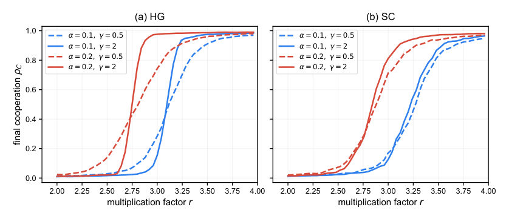
<figcaption class="paper-figure-caption"><b>Fig 1.</b> FIG. 1. Final cooperation ratio ρC as a function of the multiplication factor r in (a) randomized hypergraph (HG) and (b) simplicial complex (SC). Results are shown for two payoff exponents, γ = 0.5 and γ = 2, and two strengths of the three-body interaction, α = 0.1 and α = 0.2. In the HG, the concave case γ = 0.5 exhibits a gradual continuous-like transition, whereas the convex case γ = 2 leads to a much sharper, discontinuous-like transition. In the SC, the concave regime remains qualitatively similar, but the convex regime becomes much smoother. For visual clarity, a moving average with a window of three adjacent r values is applied to better display the shapes of the transition curves.</figcaption>
</figure>
<figure class="paper-figure-card">
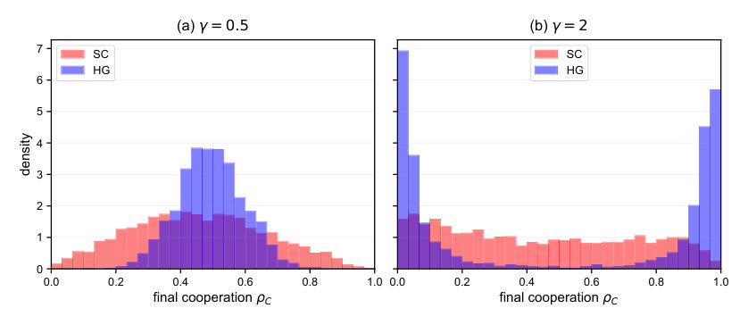
<figcaption class="paper-figure-caption"><b>Fig 2.</b> FIG. 2. Distributions of final cooperation ratio ρC near the transition region for (a) γ = 0.5 and (b) γ = 2. For γ = 0.5, both representations produce single-peaked distributions centered at intermediate cooperation levels, although the SC distribution is broader. For γ = 2, the HG exhibits a strongly bimodal distribution, indicating global bistability. In contrast, the SC produces a broad distribution over intermediate cooperation levels, showing that simplicial closure fragments the global bistability of the HG into a broad ensemble of metastable final states.</figcaption>
</figure>
<figure class="paper-figure-card">
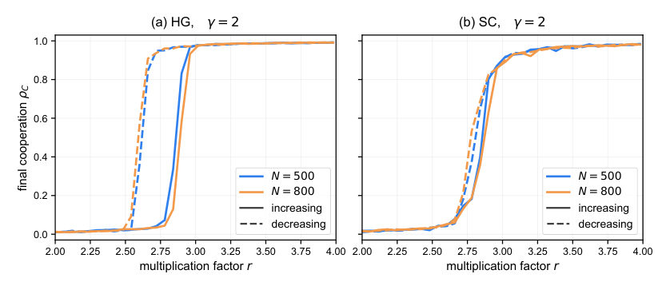
<figcaption class="paper-figure-caption"><b>Fig 3.</b> FIG. 3. Hysteresis scans for the convex payoff regime γ = 2 in (a) HG and (b) SC. Solid lines denote scans with increasing r, and dashed lines denote scans with decreasing r. The HG displays a pronounced hysteresis loop, consistent with a first-order-like transition and global bistability. In the SC, the hysteresis loop is strongly reduced but does not disappear, indicating that simplicial closure does not simply turn the explosive transition into an ordinary continuous transition. Instead, it produces a smeared discontinuous-like regime with residual path dependence.</figcaption>
</figure>
<figure class="paper-figure-card">
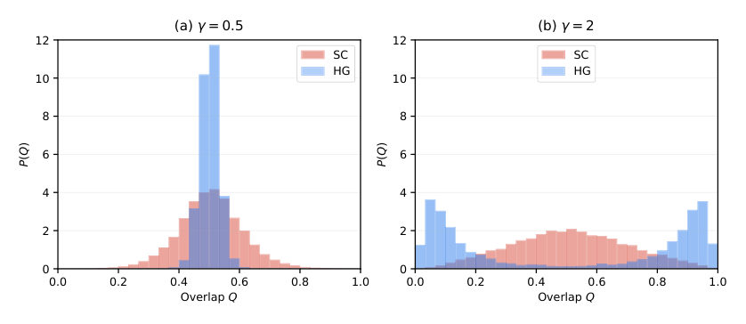
<figcaption class="paper-figure-caption"><b>Fig 4.</b> FIG. 4. Distributions of the final-state configuration overlap Q for (a) γ = 0.5 and (b) γ = 2. The overlap is computed from randomly sampled pairs of independently evolved final strategy configurations. For γ = 0.5, both HG and SC exhibit single-peaked overlap distributions centered at intermediate values; the SC distribution is broader but remains regular and bell- shaped. For γ = 2, the HG shows strong weight near both low and high overlap values, consistent with a compact two-basin structure. In contrast, the SC distribution becomes broad and flatter over intermediate overlaps, indicating a distributed set of distinct metastable final configurations induced by simplicial closure.</figcaption>
</figure>
<figure class="paper-figure-card">
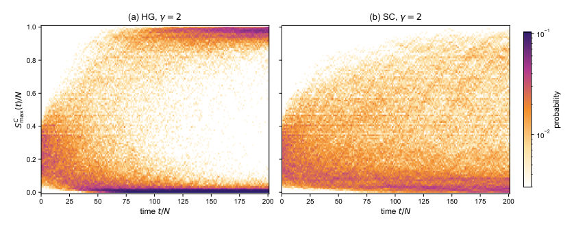
<figcaption class="paper-figure-caption"><b>Fig 5.</b> FIG. 5. Time-resolved probability-density map of the normalized largest cooperative component SCC max(t)/N in the convex regime γ = 2. Panel (a) shows the HG, and panel (b) shows the SC. In the HG, trajectories rapidly separate into two dominant branches: collapse of cooperative clusters or growth into a system-spanning cooperative component. In the SC, substantial probability remains over a wide range of intermediate component sizes, showing that cooperative nuclei can persist locally for long times without necessarily developing into a global cascade.</figcaption>
</figure>
</div>
<p><strong>Summary.</strong> This work compares cooperation dynamics in higher-order public goods games modeled on hypergraphs (HG) versus simplicial complexes (SC). The key finding is that simplicial closure selectively restructures the system's attractor landscape: it fragments sharp, first-order cooperation transitions into a broad ensemble of metastable states. This demonstrates that the geometric representation of interactions fundamentally dictates the nature of collective phase transitions.</p>
<p><strong>Why it may be interesting.</strong> The concept of structural constraints (like simplicial closure) leading to qualitative changes in collective dynamics, particularly the fragmentation of stable attractors, is relevant to understanding phase transitions in complex systems modeled by network theory.</p>
<details>
<summary>Detailed structure</summary>
<p><strong>Main problem.</strong> The paper investigates how the structural constraint of simplicial closure (SC) alters the cooperative dynamics observed in higher-order public goods games (PGGs) compared to the more general hypergraph (HG) model.</p>
<p><strong>Main result.</strong> Simplicial closure selectively fragments the compact bistability seen in explosive, first-order cooperation transitions, replacing it with a broad ensemble of metastable states, while having only quantitative effects on continuous transitions.</p>
<p><strong>Method.</strong> The authors compare the mean final cooperation level and the distribution of final states by simulating PGGs on both HG and SC representations derived from the same backbone.</p>
<p><strong>Model / system.</strong> The model is a higher-order Public Goods Game (PGG) incorporating pairwise and three-player interactions, analyzed using a Fermi imitation rule for strategy updating.</p>
<p><strong>Key observables.</strong> Mean final cooperation level ($\rho_C$), the shape of the cooperation transition (continuous vs. first-order), and the distribution of final-state configuration overlaps ($P(Q)$).</p>
<p><strong>Important parameters / regimes.</strong> The payoff exponent $\gamma$ (controlling payoff curvature, e.g., $\gamma=0.5$ vs. $\gamma=2$) and the degree of closure interpolation ($p$).</p>
<p><strong>Assumptions / limitations.</strong> The comparison assumes that the only difference between HG and SC is the enforcement of simplicial closure on the three-player interactions.</p>
<p><strong>Figures summary.</strong> Figures illustrate that for first-order transitions ($\gamma=2$), HG shows compact bimodal bistability, whereas SC shows a broad distribution of metastable states, and this effect is visible across different payoff forms.</p>
<p><strong>Paper structure.</strong> The paper establishes the model, compares the HG and SC representations across different payoff regimes ($\gamma$), and systematically analyzes the resulting changes in transition shape, bistability structure, and final-state distributions.</p>
</details>
<details>
<summary>Abstract</summary>
<p>Hypergraph (HG) and simplicial complex (SC) are two common representations of higher-order networks, and are often expected to differ mainly quantitatively when they encode comparable group interactions. Here we show that this expectation fails in evolutionary cooperation dynamics. Using a controlled higher-order public goods game (PGG) with minimal ad hoc parameters, we compare cooperation transitions on randomized HG and SC constructed from the same triangular backbone. We find that the impact of simplicial closure is selective: when the cooperation transition is continuous-like on HG, imposing simplicial closure mainly broadens the transition without changing its qualitative nature; however, when the transition is explosive and first-order-like on HG, simplicial closure will fragment the compact low/high bistability into a broad ensemble of metastable final states. Detailed analysis reveals that this selective effect arises from the dual role of simplicial closure in cooperative-nucleus dynamics: it promotes the survival of local cooperative nuclei while suppressing their conversion into system-wide cascades. Further experiments confirm that this fragmentation is not tied to a specific payoff form, but is a generic feature of explosive cooperation transitions in higher-order PGGs.</p>
</details>
<p><sub><a href="#top">↑ back to top</a></sub></p>

<p><a id="paper-2608.18030"></a></p>
<h3 id="three-qubit-entanglement-in-the-bethe-heitler-process"><a href="http://arxiv.org/abs/2608.18030v1">Three-qubit entanglement in the Bethe-Heitler process</a></h3>
<p><strong>Authors:</strong> Haotian Cao, Yuxun Guo, Yoshitaka Hatta, Jakob Schoenleber<br>
<strong>Type:</strong> theory · <strong>Category:</strong> quantum information and computing · <strong>PDF:</strong> <a href="https://arxiv.org/pdf/2608.18030v1">https://arxiv.org/pdf/2608.18030v1</a><br>
<strong>Analysis basis:</strong> full PDF text, analyzed in chunks</p>
<div class="figure-strip-hint">↔ Scroll figures horizontally</div>
<div class="paper-figures-scroll">
<figure class="paper-figure-card">
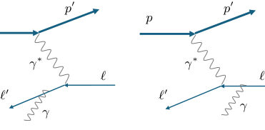
<figcaption class="paper-figure-caption"><b>Fig 1.</b> FIG. 1: Feynman diagrams for the Bethe-Heitler (Bremsstrahlung) process</figcaption>
</figure>
<figure class="paper-figure-card">
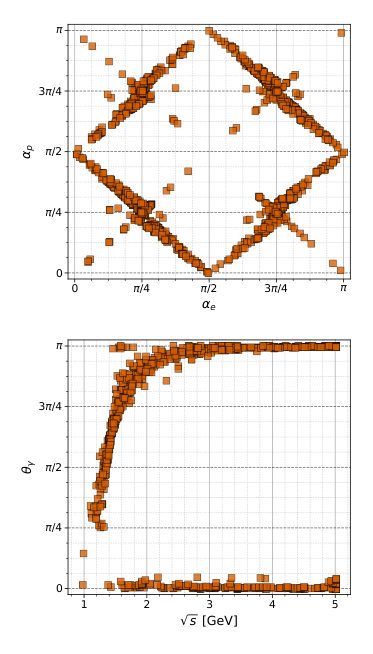
<figcaption class="paper-figure-caption"><b>Fig 2.</b> FIG. 2: GHZ states in the (αe, αp) plane (top) and (√s, θγ) plane (bottom)</figcaption>
</figure>
<figure class="paper-figure-card">
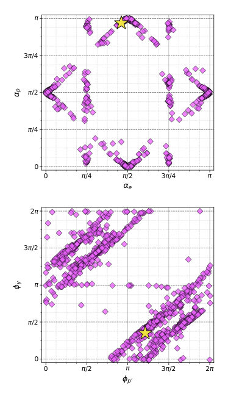
<figcaption class="paper-figure-caption"><b>Fig 3.</b> FIG. 3: W states in the (αe, αp) plane (top) and (ϕp′, ϕγ) plane (bottom)</figcaption>
</figure>
</div>
<p><strong>Summary.</strong> This theoretical study treats the Bethe-Heitler process as a quantum laboratory to study multipartite entanglement among the final electron, proton, and photon. By analyzing the helicity structure and using entanglement measures, the authors predict and simulate the existence of numerous GHZ and W states. The results confirm that genuine tripartite entanglement can be generated in this process, although these states occupy a much smaller volume in phase space than simpler bipartite entangled states.</p>
<p><strong>Why it may be interesting.</strong> This work applies quantum information concepts (GHZ/W states) to a well-understood, high-energy particle physics process, providing a concrete, calculable physical realization for testing entanglement generation mechanisms.</p>
<details>
<summary>Detailed structure</summary>
<p><strong>Main problem.</strong> The study focuses on quantifying and characterizing multipartite entanglement, specifically GHZ and W states, generated during the standard Bethe-Heitler scattering process.</p>
<p><strong>Main result.</strong> The authors successfully identified hundreds of GHZ and W states in the process, demonstrating that the BH process serves as a viable, albeit highly constrained, laboratory for generating and studying genuine tripartite entanglement.</p>
<p><strong>Method.</strong> The analysis involves calculating helicity amplitudes for the three-particle final state and using entanglement measures (concurrence, $F_{GHZ}^3$, $F_W^3$) to map out the phase space regions where these entangled states are formed.</p>
<p><strong>Model / system.</strong> The system is the Bethe-Heitler process ($e+p	o e+p+\gamma$), where the final electron, proton, and photon are treated as three qubits based on their helicity states. Entanglement is built up through successive elementary interactions.</p>
<p><strong>Key observables.</strong> Bipartite concurrences ($C_{\ell p}, C_{\ell \gamma}, C_{p\gamma}$), genuine tripartite entanglement measures ($F_{GHZ}^3, F_W^3$), and the local-unitary fidelity ($F$).</p>
<p><strong>Important parameters / regimes.</strong> Center-of-mass energy ($\sqrt{s} < 5$ GeV), mixing angles ($\alpha_e, \alpha_p$), and specific kinematic regimes (e.g., backward scattering, collinear emission).</p>
<p><strong>Assumptions / limitations.</strong> The analysis relies on identifying local minima in the high-dimensional phase space and estimating the volume and overlap rates of these discrete entangled regions.</p>
<p><strong>Figures summary.</strong> Figures illustrate the distribution of found GHZ and W states in various parameter planes (e.g., $(\alpha_e, \alpha_p)$ plane) and compare the phase space volumes of entangled states versus bipartite states.</p>
<p><strong>Paper structure.</strong> The paper systematically analyzes the entanglement generation via two-step processes, calculates entanglement measures, identifies specific kinematic conditions for maximal entanglement, and finally quantifies the phase space volume occupied by the discrete GHZ and W states compared to continuous bipartite entanglement regions.</p>
</details>
<details>
<summary>Abstract</summary>
<p>The familiar Bethe-Heitler process on the proton target $e+p\to e+p+γ$ is transformed into a laboratory for studying multiparticle entanglement. We discuss how bipartite and genuine tripartite entanglement between the final state electron, proton and photon are built up by successive $1\to 2$ and $2\to 2$ elementary interactions. We validate our argument by simulating events. Below 5 GeV center-of-mass energy, we identify more than 900 Greenberger-Horne-Zeilinger (GHZ) states and 1200 W states, each with a fidelty exceeding 99%.</p>
</details>
<p><sub><a href="#top">↑ back to top</a></sub></p>

<p><a id="paper-2608.17610"></a></p>
<h3 id="towards-the-impossibility-of-imperfectly-complete-key-agreement-in-the-qrom"><a href="http://arxiv.org/abs/2608.17610v1">Towards the Impossibility of Imperfectly Complete Key Agreement in the QROM</a></h3>
<p><strong>Authors:</strong> Fuyuki Kitagawa, Ryo Nishimaki, Agi Villanyi, Takashi Yamakawa<br>
<strong>Type:</strong> theory · <strong>Category:</strong> other · <strong>PDF:</strong> <a href="https://arxiv.org/pdf/2608.17610v1">https://arxiv.org/pdf/2608.17610v1</a><br>
<strong>Analysis basis:</strong> full PDF text, analyzed in chunks</p>
<div class="figure-strip-hint">↔ Scroll figures horizontally</div>
<div class="paper-figures-scroll">
<figure class="paper-figure-card">
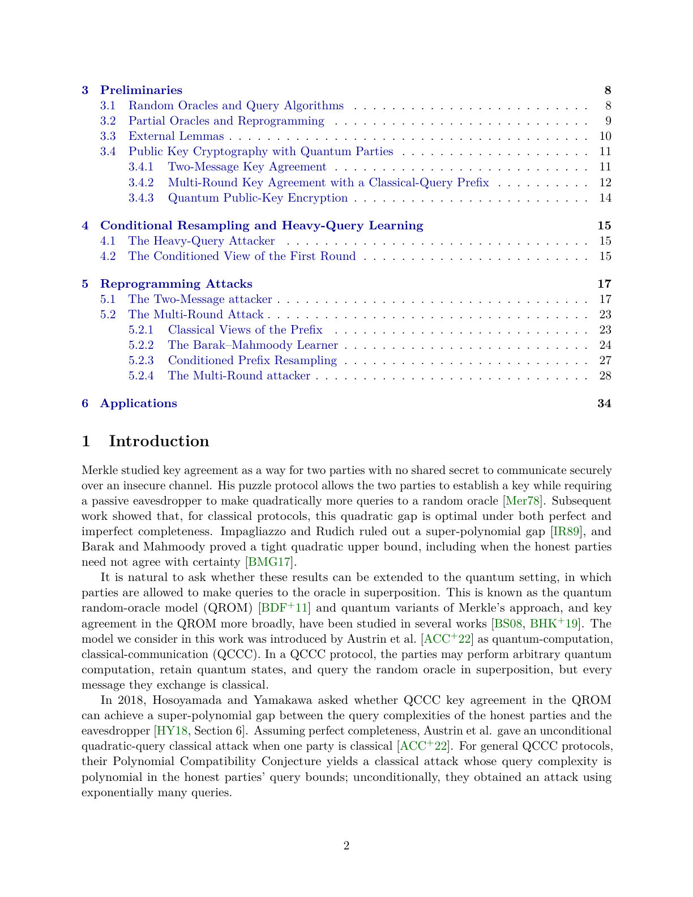
<figcaption class="paper-figure-caption"><b>Fig 1.</b> Low-resolution page preview, page 2</figcaption>
</figure>
<figure class="paper-figure-card">
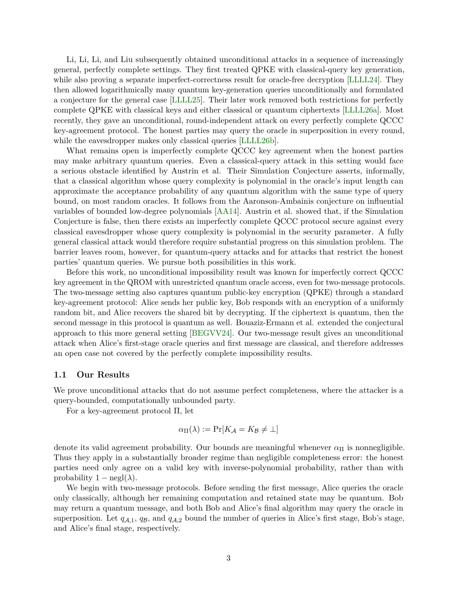
<figcaption class="paper-figure-caption"><b>Fig 2.</b> Low-resolution page preview, page 3</figcaption>
</figure>
<figure class="paper-figure-card">
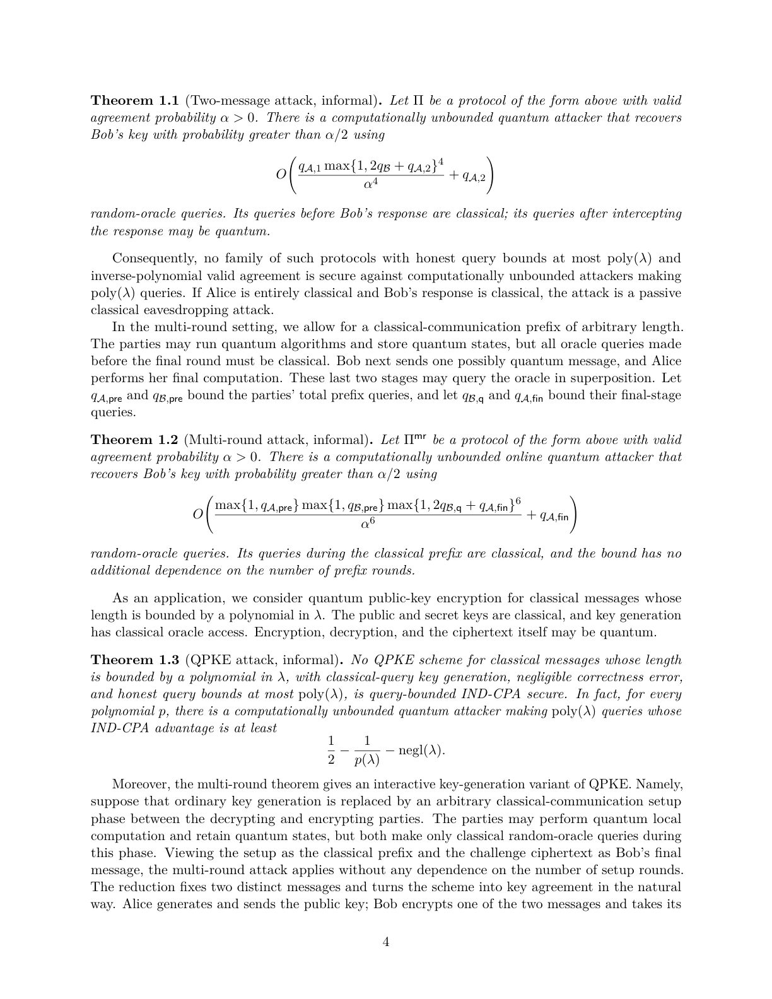
<figcaption class="paper-figure-caption"><b>Fig 3.</b> Low-resolution page preview, page 4</figcaption>
</figure>
<figure class="paper-figure-card">
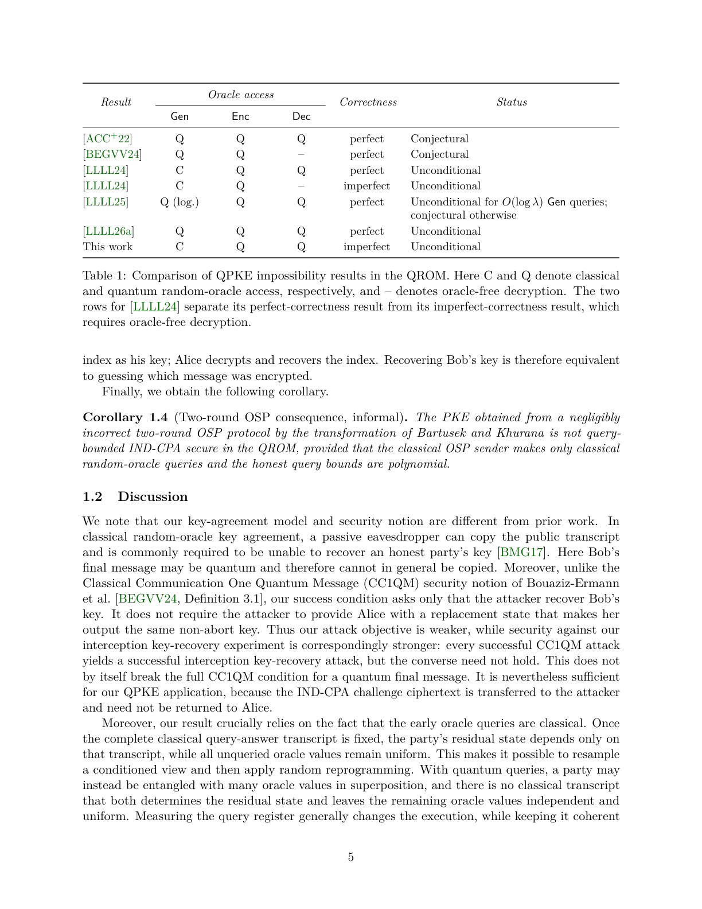
<figcaption class="paper-figure-caption"><b>Fig 4.</b> Low-resolution page preview, page 5</figcaption>
</figure>
<figure class="paper-figure-card">
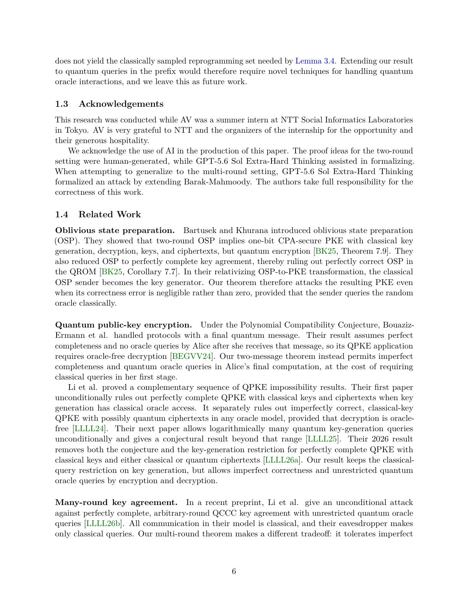
<figcaption class="paper-figure-caption"><b>Fig 5.</b> Low-resolution page preview, page 6</figcaption>
</figure>
</div>
<p><strong>Summary.</strong> This paper proves the impossibility of certain quantum key agreement schemes in the QROM by constructing unconditional quantum attacks. Using advanced techniques like heavy-query learning, the authors show that if the agreement probability is not perfect, the key can be recovered by an unbounded attacker. This result has direct implications for the security of quantum public-key encryption.</p>
<p><strong>Why it may be interesting.</strong> While highly theoretical, the rigorous analysis of information-theoretic security boundaries in quantum cryptography provides foundational tools for understanding the limits of quantum communication protocols.</p>
<details>
<summary>Detailed structure</summary>
<p><strong>Main problem.</strong> The paper investigates the theoretical impossibility of achieving imperfectly complete Quantum-Computation, Classical-Communication (QCCC) key agreement protocols within the Quantum Random Oracle Model (QROM).</p>
<p><strong>Main result.</strong> It rules out imperfectly correct quantum public-key encryption (QPKE) for classical messages whose length is polynomially bounded in the QROM under specific conditions.</p>
<p><strong>Method.</strong> The analysis constructs unconditional quantum attacks by combining heavy-query learning techniques with random reprogramming lemmas.</p>
<p><strong>Model / system.</strong> The model is the QROM applied to key agreement protocols, considering settings like two-message and multi-round interactions where parties perform quantum computations and make oracle queries.</p>
<p><strong>Key observables.</strong> The valid agreement probability ($\alpha_{\Pi}(\lambda)$) and the attacker's ability to recover the shared key.</p>
<p><strong>Important parameters / regimes.</strong> The query bounds ($q_{A,1}, q_{B}, q_{A,2}$, etc.) and the inverse-polynomial nature of the valid agreement probability.</p>
<p><strong>Assumptions / limitations.</strong> The attacker is computationally unbounded, and the honest query bounds are polynomially bounded in $\lambda$.</p>
<p><strong>Figures summary.</strong> Not specified, but the notes detail theorems and corollaries establishing quantitative bounds on the advantage of the attack.</p>
<p><strong>Paper structure.</strong> The paper progresses by analyzing specific settings (two-message, multi-round) to establish attack bounds, culminating in the impossibility result for QPKE.</p>
</details>
<details>
<summary>Abstract</summary>
<p>We make progress towards the impossibility of imperfectly complete quantum-computation, classical-communication (QCCC) key agreement by constructing the first unconditional attacks on quantum key agreement in the following restricted settings. In the two-message setting, we assume that Alice makes only classical queries to the oracle in the first round and that her message to Bob is classical, but otherwise both parties may perform arbitrary quantum computation, make quantum queries, and send a quantum state in the second round. Our attack and analysis are based on the heavy-query learning techniques from Austrin et al. (CRYPTO 2022) and the reprogramming techniques of Katz and Sela (arXiv 2401.14319). In the round-independent setting, we show that the attack of Barak and Mahmoody (CRYPTO 2009; J. Cryptology 2017) can be extended to multiple rounds when Alice and Bob share classical communication and make only classical queries in all but the final round. In both settings, the attacker is computationally unbounded and makes $poly(λ)$ queries to recover the key whenever each honest query bound is at most $poly(λ)$ and the valid agreement probability is inverse-polynomial. As a consequence, we rule out imperfectly correct quantum public-key encryption for classical messages whose length is bounded by a polynomial in $λ$ in the QROM when key generation has classical oracle access, even if encryption, decryption, and the ciphertext are quantum. In particular, the one-bit case applies to the imperfectly correct PKE obtained from two-round OSP by Bartusek and Khurana (CRYPTO 2025) whenever the classical OSP sender makes only classical random-oracle queries.</p>
</details>
<p><sub><a href="#top">↑ back to top</a></sub></p>

<p><a id="paper-2608.17037"></a></p>
<h3 id="tracking-nonlinear-solar-wind-dynamics-over-three-solar-cycles-using-wind-observations"><a href="http://arxiv.org/abs/2608.17037v1">Tracking nonlinear solar-wind dynamics over three solar cycles using Wind observations</a></h3>
<p><strong>Authors:</strong> Dario Javier Zamora, Facundo Maximo Abaca<br>
<strong>Type:</strong> experiment · <strong>Category:</strong> statistical mechanics · <strong>PDF:</strong> <a href="https://arxiv.org/pdf/2608.17037v1">https://arxiv.org/pdf/2608.17037v1</a><br>
<strong>Analysis basis:</strong> full PDF text, analyzed in chunks</p>
<div class="figure-strip-hint">↔ Scroll figures horizontally</div>
<div class="paper-figures-scroll">
<figure class="paper-figure-card">
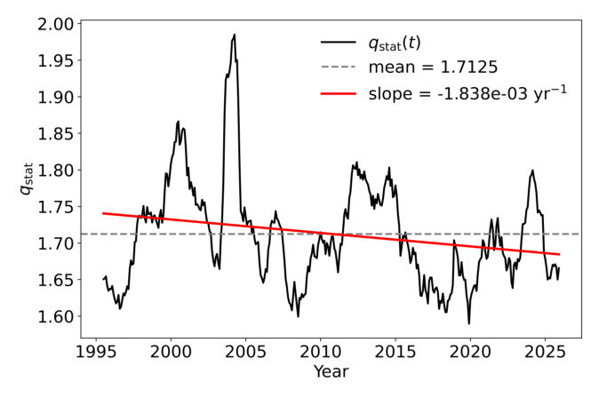
<figcaption class="paper-figure-caption"><b>Fig 1.</b> Figure 1: Temporal evolution of qstat derived from Wind proton density measurements over 1995–2025 using sliding one-year windows. The dashed gray line indicates the mean value, while the red line represents the linear trend.</figcaption>
</figure>
<figure class="paper-figure-card">
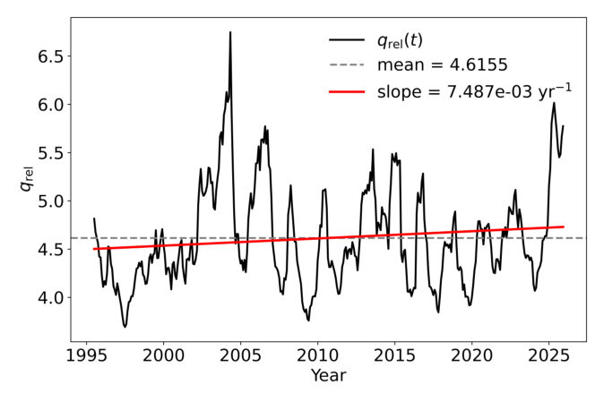
<figcaption class="paper-figure-caption"><b>Fig 2.</b> Figure 2: Temporal evolution of qrel derived from Wind proton density measurements over 1995–2025 using sliding one-year windows. The dashed gray line indicates the mean value, while the red line represents the linear trend.</figcaption>
</figure>
<figure class="paper-figure-card">
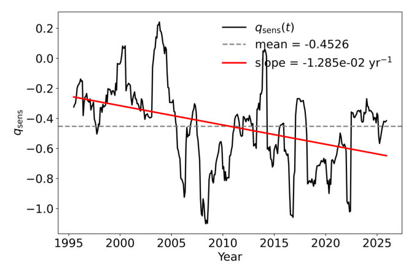
<figcaption class="paper-figure-caption"><b>Fig 3.</b> Figure 3: Temporal evolution of qsens derived from Wind proton density measurements over 1995–2025 using sliding one-year windows. The dashed gray line indicates the mean value, while the red line represents the linear trend.</figcaption>
</figure>
<figure class="paper-figure-card">
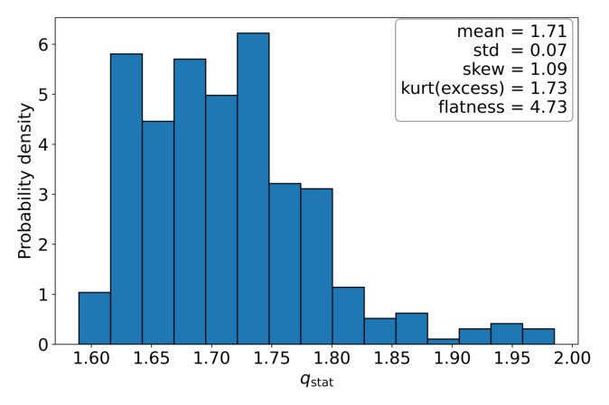
<figcaption class="paper-figure-caption"><b>Fig 4.</b> Figure 4: Probability density function of qstat derived from Wind proton density measurements over 1995–2025.</figcaption>
</figure>
<figure class="paper-figure-card">
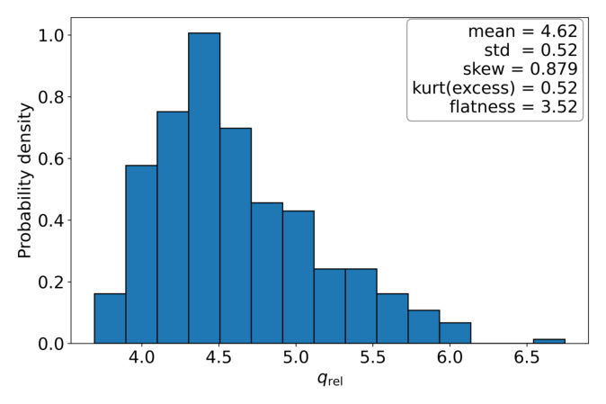
<figcaption class="paper-figure-caption"><b>Fig 5.</b> Figure 5: Probability density function of qrel derived from Wind proton density measurements over 1995–2025.</figcaption>
</figure>
</div>
<p><strong>Summary.</strong> This research analyzes decades of solar wind proton density data to characterize its statistical and dynamical properties using nonextensive statistical mechanics. By calculating the q-triplet, the authors confirm persistent heavy-tailed fluctuations and slow relaxation. Crucially, they demonstrate that these plasma properties are modulated by the solar cycle, showing a strong periodicity linked to solar activity.</p>
<p><strong>Why it may be interesting.</strong> The application of nonextensive statistics and multifractal analysis to space plasma dynamics provides a rigorous, non-equilibrium framework for characterizing turbulence and long-range correlations in astrophysical plasmas.</p>
<details>
<summary>Detailed structure</summary>
<p><strong>Main problem.</strong> To investigate the long-term evolution and solar cycle dependence of nonlinear statistical and dynamical properties of solar wind plasma.</p>
<p><strong>Main result.</strong> The statistical properties, characterized by the q-triplet, confirm persistent heavy-tailed statistics and slow relaxation, showing modulation by solar activity with a dominant periodicity of $\sim 10.1$ years.</p>
<p><strong>Method.</strong> The study uses nonextensive statistical mechanics to estimate the q-triplet ($  ext{qstat}$, $  ext{qrel}$, $   ext{qsens}$) from hourly proton density measurements using sliding time windows.</p>
<p><strong>Model / system.</strong> The physical system is the turbulent, weakly collisional solar wind plasma, analyzed using the Wind spacecraft's proton density measurements over three decades (1995–2025). The analysis framework is nonextensive statistical mechanics.</p>
<p><strong>Key observables.</strong> The q-triplet ($   ext{qstat}$, $  ext{qrel}$, $   ext{qsens}$), proton density increments, autocorrelation function decay, and multifractal spectrum.</p>
<p><strong>Important parameters / regimes.</strong> Mean values: $  ext{qstat}=1.71\pm0.07$, $  ext{qrel}=4.62\pm0.52$, $   ext{qsens}=-0.45\pm0.27$. Key regimes include $q>1$ for heavy tails and slow relaxation.</p>
<p><strong>Assumptions / limitations.</strong> The analysis relies on a single-spacecraft dataset (Wind) to provide an independent test, though potential orbital transition effects must be considered.</p>
<p><strong>Figures summary.</strong> Figures illustrate the temporal evolution of the three q-parameters, the correlation between $ ext{qstat}$ and sunspot number, and the Fourier power spectrum of $ ext{qstat}$ showing a dominant $\sim 10.1$-year peak.</p>
<p><strong>Paper structure.</strong> The paper analyzes the time series of the q-triplet over 1995–2025, calculates correlations with solar/geomagnetic indices, and uses Fourier analysis to determine periodicity and modulation by solar activity.</p>
</details>
<details>
<summary>Abstract</summary>
<p>The solar wind is a turbulent, weakly collisional plasma characterized by non-Gaussian fluctuations, long-range correlations, and multifractal dynamics. We investigate the long-term evolution of these properties using hourly proton density measurements obtained directly by the Wind spacecraft over 1995--2025. The use of a single-spacecraft dataset provides an independent test of previous results derived from the multi-spacecraft OMNI database. The three components of the nonextensive $q$-triplet are estimated within one-year sliding windows shifted monthly: $q_{stat}$ from the distribution of density increments, $q_{rel}$ from the decay of the autocorrelation function, and $q_{sens}$ from the multifractal spectrum. Their mean values, $q_{stat}=1.71\pm0.07$, $q_{rel}=4.62\pm0.52$, and $q_{sens}=-0.45\pm0.27$, confirm the persistent presence of heavy-tailed statistics, slow relaxation, and weakly chaotic multifractal dynamics. The parameters nevertheless exhibit distinct temporal variability and relationships with solar activity. The Fourier spectrum of $q_{stat}$ contains a dominant period of approximately $10.1$ years, while its correlation with the sunspot number is positive and moderate ($r=0.611$). Correlation and mutual-information analyses show that $q_{stat}$ is primarily associated with solar proxies, whereas $q_{sens}$ displays stronger relationships with geomagnetic indices and $q_{rel}$ exhibits weaker dependencies. An anomalous enhancement of $q_{stat}$ around 2004 coincides with a sequence of intense interplanetary disturbances, although possible effects related to Wind's orbital transition must also be considered. These findings demonstrate the robustness of the nonextensive description and show that the statistical and dynamical properties of solar wind proton density show evidence of modulation by solar activity.</p>
</details>
<p><sub><a href="#top">↑ back to top</a></sub></p>

<p><a id="paper-2608.17629"></a></p>
<h3 id="unclonable-encryption-from-bb84-states-a-simultaneous-goldreich-levin-reduction"><a href="http://arxiv.org/abs/2608.17629v1">Unclonable encryption from BB84 states: a simultaneous Goldreich-Levin reduction</a></h3>
<p><strong>Authors:</strong> Andrea Coladangelo, Qipeng Liu, Ziyi Xie<br>
<strong>Type:</strong> theory · <strong>Category:</strong> quantum information and computing · <strong>PDF:</strong> <a href="https://arxiv.org/pdf/2608.17629v1">https://arxiv.org/pdf/2608.17629v1</a><br>
<strong>Analysis basis:</strong> full PDF text, analyzed in chunks</p>
<div class="figure-strip-hint">↔ Scroll figures horizontally</div>
<div class="paper-figures-scroll">
<figure class="paper-figure-card">
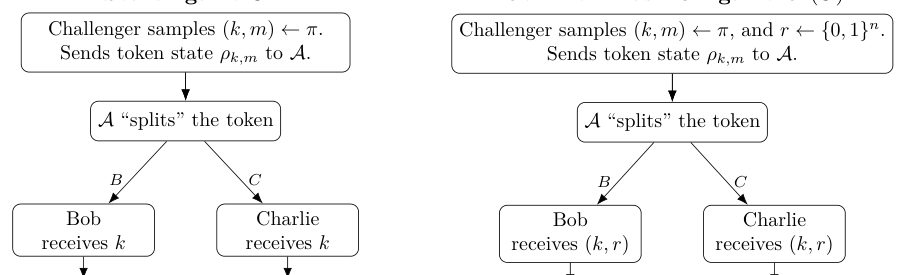
<figcaption class="paper-figure-caption"><b>Fig 1.</b> Figure 1: The search game G (left) and its common-mask Goldreich–Levin variant GL(G) (right).</figcaption>
</figure>
</div>
<p><strong>Summary.</strong> This paper develops a novel 'simultaneous Goldreich-Levin reduction' applicable to quantum cryptography when parties share a common random mask. It successfully upgrades the security guarantee of unclonable encryption schemes from a search-based security notion to the stronger indistinguishability notion. This advances the theoretical understanding of quantum cryptographic security proofs.</p>
<p><strong>Why it may be interesting.</strong> The work provides a rigorous, information-theoretic bridge connecting two fundamental security notions (search vs. decision) in quantum cryptography, which is highly relevant for quantum information security protocols.</p>
<details>
<summary>Detailed structure</summary>
<p><strong>Main problem.</strong> The paper aims to establish a 'simultaneous Goldreich-Levin reduction' to upgrade unclonable encryption schemes from 'search' security to the stronger 'unclonable indistinguishability' (decision) security.</p>
<p><strong>Main result.</strong> The authors provide a general, information-theoretic reduction showing that the search security implies indistinguishability security in the common-mask setting, and demonstrate this for the simplest BB84 candidate scheme.</p>
<p><strong>Method.</strong> The core method involves adapting the classical Goldreich-Levin reduction framework to the quantum setting, specifically addressing the challenge of a common random mask shared by two entangled parties.</p>
<p><strong>Model / system.</strong> The security analysis is built around unclonable encryption schemes, using the BB84 monogamy-of-entanglement game as a source of initial 'search' security.</p>
<p><strong>Key observables.</strong> Success probabilities in the search game ($p_{	ext{Search}}$) and the common-mask GL game ($p_{	ext{Pred}}$); the relationship $\Delta = 2p_{	ext{Pred}} - 1$.</p>
<p><strong>Important parameters / regimes.</strong> The reduction yields bounds like $p_{	ext{Search}} \geq \Delta^4$, and later theorems introduce parameters like $\gamma$ and $L_{\max}$ for efficiency analysis.</p>
<p><strong>Assumptions / limitations.</strong> The analysis assumes the existence of a common-mask GL reduction and later theorems rely on assumptions regarding the computability of parameters ($\gamma$) or the ability to truncate sampling ($L_{\max}$).</p>
<p><strong>Figures summary.</strong> Figure 1 illustrates the conceptual difference between the search game G and its common-mask GL variant GL(G).</p>
<p><strong>Paper structure.</strong> The paper develops the general reduction from the GL game to the search game, proving the existence of the reduction ($p_{	ext{Search}} \geq \Delta^4$). Subsequent sections refine this reduction, providing uniform and truncated variants that improve efficiency and robustness.</p>
</details>
<details>
<summary>Abstract</summary>
<p>Goldreich-Levin reductions are ubiquitous in cryptography: they convert an algorithm capable of guessing $\langle r, m \rangle$ (mod $2$) for a hidden string $m$ and a random challenge $r$, to one that is capable of extracting the entirety of $m$. Here, we describe a "simultaneous" Goldreich-Levin reduction for two entangled parties who are capable of guessing $\langle r, m \rangle$ given uniformly random identical challenges $r$. This allows to upgrade any unclonable encryption scheme satisfying "search" security to one satisfying the gold standard of unclonable "indistinguishability". As a corollary, we show that the simplest candidate unclonable encryption scheme from BB84 states satisfies unclonable indistinguishability.   This result was discovered by GPT-5.6 Ultra after a few interactions. Our prompts included recent results on unclonable encryption by Ananth and Sahai, and Ragavan.</p>
</details>
<p><sub><a href="#top">↑ back to top</a></sub></p>
</details>
<h2 id="secondary-cond-mat-archives">Secondary cond-mat archives</h2>
<p><em>Papers from cond-mat.mtrl-sci, mes-hall, other, soft, supr-con. These archives are de-prioritized — they appear at the end regardless of relevance score.</em></p>
<h3 id="relevant-in-secondary-archives-8">Relevant in secondary archives (8)</h3>

<p><a id="paper-2608.17404"></a></p>
<h3 id="flux-tunable-global-and-local-superconductivity-in-a-topological-insulator-nano-squid"><a href="http://arxiv.org/abs/2608.17404v1">Flux-tunable global and local superconductivity in a topological insulator nano-SQUID</a></h3>
<p><strong>Authors:</strong> Ella Nikodem, Jakob Schluck, Michał Papaj, Max Geier, Mahasweta Bagchi, Liang Fu, Henry F. Legg, Yoichi Ando<br>
<strong>Type:</strong> experiment · <strong>Category:</strong> other · <strong>PDF:</strong> <a href="https://arxiv.org/pdf/2608.17404v1">https://arxiv.org/pdf/2608.17404v1</a><br>
<strong>Analysis basis:</strong> full PDF text, analyzed in chunks
<strong>Topic relevance:</strong> <code>quantum measurements</code> <strong>3/5</strong> · <code>QC/QI experiment</code> <strong>1/5</strong> · <code>analog quantum simulation</code> <strong>1/5</strong> · <code>correlated / nonlocal dissipation</code> <strong>1/5</strong> · <code>driven-dissipative phase transition</code> <strong>1/5</strong></p>
<div class="figure-strip-hint">↔ Scroll figures horizontally</div>
<div class="paper-figures-scroll">
<figure class="paper-figure-card">
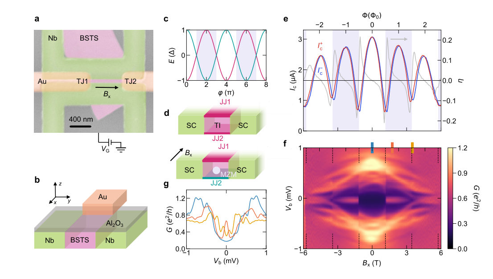
<figcaption class="paper-figure-caption"><b>Fig 1.</b> FIG. 1. Flux-tunable transport and local spectroscopy in a nano-SQUID. a, Scanning electron microscope (SEM) image of the device. An exfoliated topological-insulator (TI) flake is patterned into a nanowire (pink) by dry etching. The etched regions are filled with Nb (green), forming a sandwich junction. Residual TI fragments do not participate in transport. Gold electrodes contact the TI nanowire via tunnel junctions TJ1 and TJ2, enabling local probing of the density of states. b, Schematic of the baseline device, featuring the TI nanowire core, the superconducting shell, tunnel dielectric, and a single functional TJ. c, Energy-phase dispersion of the perpendicular (kx = 0) mode in a TI...</figcaption>
</figure>
<figure class="paper-figure-card">
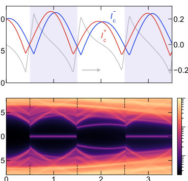
<figcaption class="paper-figure-caption"><b>Fig 2.</b> FIG. 2. Theory of topological superconductivity in a TI nano- SQUID. a, Calculated ground-state phase difference, explicitly map- ping the 0 −π transition to topological boundaries. b, Calculated Ic and η vs. flux Φ. c, Simulated energy spectrum as a function of Φ, showing the spectral jumps at the values of the topological phase transition and the emergence of zero-energy modes in regions with an odd number of flux quanta.</figcaption>
</figure>
<figure class="paper-figure-card">
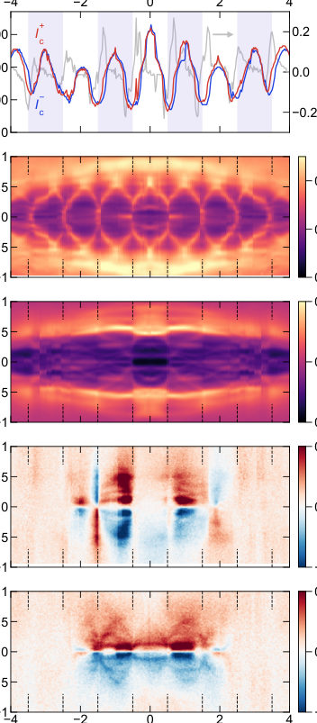
<figcaption class="paper-figure-caption"><b>Fig 3.</b> FIG. 3. Simultaneous global and dual-local spectroscopy. a, Global Ic and η in device B. Note that the cross-section is larger than for device A and multiple oscillations of Ic are observed. b, c, Dif- ferential conductance measured simultaneously at TJ1 (GLL, b) and TJ2 (GRR, c). Abrupt spectral jumps occur at fields commensurate with Ic anomalies. However, there are zero-bias peaks visible in both theoretically topological regimes and trivial regimes. d, e, Nonlocal conductance GLR and GRL showing that some features correspond to the boundaries of the expected topological regimes.</figcaption>
</figure>
<figure class="paper-figure-card">
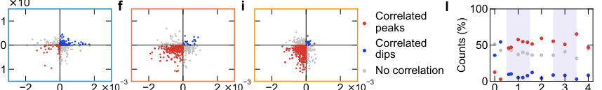
<figcaption class="paper-figure-caption"><b>Fig 4.</b> FIG. 4. Gate-voltage dependence and end-to-end correlations. a, b, d, e, g, h GLL and GRR in device B as a function of VG for trivial and topological flux regimes. c, f, i End-to-end correlation analysis using the product of the the third derivative at zero bias. j VG-dependence of Ic (black) and the normal state resistance RN (grey). k VG-dependence of GLL and GRR. l Relative fraction of gate voltages exhibiting correlated zero-bias conductance peaks (red), correlated zero-bias conductance dips (blue), or no correlation (grey) as a function of Bx.</figcaption>
</figure>
</div>

<p><strong>Summary.</strong> This paper investigates topological superconductivity in a TI nano-SQUID by measuring both global critical currents and local tunneling conductance. While global measurements show clear, flux-tunable signatures consistent with a topological phase transition, the local measurements yield ambiguous results. The authors conclude that a combined, integrated approach is necessary to definitively confirm the presence of Majorana bound states.</p>
<p><strong>Why it may be interesting.</strong> This work directly addresses the experimental challenge of verifying topological superconductivity by comparing macroscopic (global) transport signatures with microscopic (local) spectroscopic signatures, which is highly relevant to open quantum systems research.</p>
<details>
<summary>Detailed structure</summary>
<p><strong>Main problem.</strong> The study aims to investigate and conclusively identify topological superconductivity, motivated by the search for Majorana bound states (MBSs), in a solid-state platform.</p>
<p><strong>Main result.</strong> Global superconducting signatures (e.g., $h/2e$ flux periodicity and SDE reversal) are observed, suggesting a topological phase transition, but local measurements show ambiguous zero-bias peaks that do not correlate robustly with global signatures.</p>
<p><strong>Method.</strong> The research combines global transport measurements (critical current, superconducting diode effect) with local tunneling spectroscopy and nonlocal conductance measurements on a nano-SQUID structure.</p>
<p><strong>Model / system.</strong> The physical system is a three-dimensional topological insulator (TI) nanowire proximitized by a superconductor, configured as a nano-SQUID. The system's superconducting properties are tuned by an external axial magnetic flux ($\Phi$) and gate voltage ($V_b$).</p>
<p><strong>Key observables.</strong> Critical current ($I_c$), superconducting diode effect (SDE) polarity, zero-bias conductance peaks (ZBPs), and nonlocal conductance ($G_{LL}, G_{RL}$).</p>
<p><strong>Important parameters / regimes.</strong> Axial magnetic flux ($\Phi$), gate voltage ($V_G$), and the superconducting flux quantum ($\Phi_0 = h/2e$).</p>
<p><strong>Assumptions / limitations.</strong> The authors caution that the lack of correlation between local ZBP signatures and global signatures implies that conclusively identifying MBSs requires integrating global topological property establishment with advanced local probes.</p>
<p><strong>Figures summary.</strong> Figures illustrate the device structure, $I_c$ vs. $B_x$ showing oscillations, and simultaneous measurements comparing global $I_c$ anomalies with local conductance spectral jumps and nonlocal conductance changes across different flux regimes.</p>
<p><strong>Paper structure.</strong> The paper systematically presents global measurements demonstrating flux-tunable topological signatures, followed by local spectroscopy confirming spectral jumps, and concludes by analyzing the correlation (or lack thereof) between these local and global findings to address the ambiguity of MBS identification.</p>
</details>
<details>
<summary>Abstract</summary>
<p>Topological systems are defined by global properties that enforce the existence of local boundary modes. Three-dimensional topological insulators (TIs) were among the earliest proposed systems for hosting topological superconductivity, but experimental focus subsequently shifted to other platforms. Here, we revisit bulk-insulating TIs using a columnar nano-superconducting quantum interference device (nano-SQUID) architecture. This geometry optimises the proximity effect on the TI surface and enables simultaneous probing of global superconducting properties - via the critical current through the nano-SQUID - alongside the local states at the ends of the nano-SQUID via tunnel junctions. We observe several global superconducting features that appear to show a flux-driven global phase transition consistent with entering the topological regime, including periodic critical current oscillations and a sign reversal in the superconducting diode effect. Simultaneously, tunnelling spectroscopy reveals spectral jumps in local and nonlocal conductance that align with these global features. However, zero-bias peaks (ZBPs) in local conductance are present both within the predicted topological range of magnetic fields and in theoretically trivial regimes, including at zero magnetic field. Ultimately, the lack of correlation between local ZBP signatures and global signatures emphasises that conclusively identifying Majorana bound states will necessitate a combined approach, integrating the establishment of global topological properties with the use of local and other, more advanced, probes.</p>
</details>
<p><sub><a href="#top">↑ back to top</a></sub></p>

<p><a id="paper-2608.17677"></a></p>
<h3 id="robust-stabilization-of-high-frequency-magnetic-droplets-in-w-cofeb-mgo-nanoconstriction-spin-hall-nano-oscillators"><a href="http://arxiv.org/abs/2608.17677v1">Robust stabilization of high-frequency magnetic droplets in W-CoFeB-MgO nanoconstriction spin Hall nano-oscillators</a></h3>
<p><strong>Authors:</strong> Hind Prakash, Arunima TM, Roman Khymyn, Himanshu Fulara<br>
<strong>Type:</strong> theory · <strong>Category:</strong> other · <strong>PDF:</strong> <a href="https://arxiv.org/pdf/2608.17677v1">https://arxiv.org/pdf/2608.17677v1</a><br>
<strong>Analysis basis:</strong> full PDF text, analyzed in chunks
<strong>Topic relevance:</strong> <code>driven-dissipative phase transition</code> <strong>2/5</strong> · <code>non-equilibrium universality</code> <strong>2/5</strong> · <code>Frenkel-Kontorova</code> <strong>1/5</strong> · <code>Keldysh / 2PI / non-Gaussian methods</code> <strong>1/5</strong> · <code>analog quantum simulation</code> <strong>1/5</strong> · <code>methods for driven-dissipative</code> <strong>1/5</strong> · <code>quantum measurements</code> <strong>1/5</strong> · <code>scars &amp; prethermalization</code> <strong>1/5</strong></p>
<div class="figure-strip-hint">↔ Scroll figures horizontally</div>
<div class="paper-figures-scroll">
<figure class="paper-figure-card">
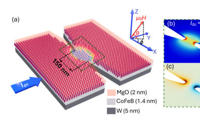
<figcaption class="paper-figure-caption"><b>Fig 1.</b> Fig. 1 SHNO device schematic, COMSOL simulations, and magnetodynamical non- linearity. a, Schematic of a 150 nm nanoconstriction SHNO device, illustrating magnetic droplet nucleation at the constriction region. COMSOL simulated b, Current density and c, Oersted field distributions for the highlighted area in the schematic. d, Color map of the analytically calculated nonlinearity coefficient (N) for a ferromagnetic thin film (employing the methodology outlined in ref. [44, 45]), shown as a function of PMA field and applied OOP field orientation (µ0H = 0.45 T), for µ0Ms = 0.93 T. Dotted black lines indicate N = 0.</figcaption>
</figure>
<figure class="paper-figure-card">

<figcaption class="paper-figure-caption"><b>Fig 2.</b> Figure 1(a) shows the schematic of the SHNO device along with an illustration of a nucleated droplet within the constriction geometry, where arrows indicate the local magnetization direction. The constriction has a nominal width of 150 nm, an opening angle of 22◦, and a curvature radius of 50 nm. Figures 1(b) and (c) present the sim- ulated current density and Oersted field distributions within the bilayer for a drive</figcaption>
</figure>
<figure class="paper-figure-card">
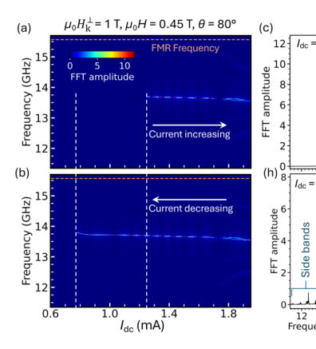
<figcaption class="paper-figure-caption"><b>Fig 3.</b> Fig. 2 Magnetic droplet dynamics in a 150 nm W/CoFeB/MgO nanoconstriction SHNO: Current-sweep spectra for a, increasing and b, decreasing current exhibit pronounced hys- teresis behaviour, evidencing droplet nucleation; the orange dashed line marks the FMR frequency. c, FFT spectrum at a fixed Idc = 1.5 mA with d,e, corresponding magnetization snapshots at two time instances and f,g, mz line profiles along the y-axis through the constriction (orange dashed line), demonstrating complete magnetization reversal. h, FFT spectrum at Idc = 1.9 mA, highlight- ing droplet sidebands, with i,j, corresponding magnetization snapshots and k,l, mz line profiles along the same axis, illustrating droplet...</figcaption>
</figure>
<figure class="paper-figure-card">
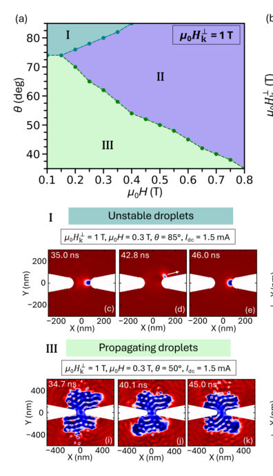
<figcaption class="paper-figure-caption"><b>Fig 4.</b> Fig. 3 Phase diagrams of auto-oscillation modes and representative magnetization dynamics. a, Phase diagram of auto-oscillations as a function of OOP field strength and field ori- entation at a fixed PMA of 1 T, revealing three regimes: unstable droplets (dark green), stable non-propagating droplets (purple), and propagating droplets (light green). b, Phase diagram as a function of applied field and PMA at a fixed OOP angle of 80◦, showing three regimes, includ- ing propagating SW auto-oscillations (light red). Representative magnetization snapshots of c,d,e Dynamically unstable droplets; f,g,h, a stable, non-propagating droplet confined to the constriction; i,j,k, cpropagating droplets...</figcaption>
</figure>
<figure class="paper-figure-card">
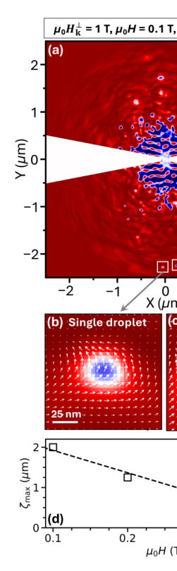
<figcaption class="paper-figure-caption"><b>Fig 5.</b> Fig. 4 Propagating magnetic droplets and their propagation length. a, Magnetization snapshot at t = 52.9 ns showing droplet propagation in the nanoconstriction SHNO. The zoomed-in views in b, and c, highlight a single propagating droplet and a merged droplet state, respectively. d, Maximum droplet propagation length as a function of the applied magnetic field; the black dashed line represents a linear fit to the data points.</figcaption>
</figure>
</div>

<p><strong>Summary.</strong> This work investigates the stabilization and control of high-frequency magnetic droplets, which are nonlinear spin-wave solitons, within nanoscale Spin Hall Nano-Oscillators. Using micromagnetic simulations, the authors show that by carefully tuning the applied magnetic field, they can robustly stabilize these droplets in a non-propagating state, and further control their transition into propagating modes. This offers a pathway for advanced spintronic devices for both local memory and interconnect applications.</p>
<p><strong>Why it may be interesting.</strong> While focused on classical magnetism, the study of localized, nonlinear wave packets (solitons) and their stability under external driving forces shares mathematical parallels with nonlinear wave phenomena studied in quantum optics and open quantum systems.</p>
<details>
<summary>Detailed structure</summary>
<p><strong>Main problem.</strong> The primary goal was to demonstrate the robust stabilization of non-propagating, high-frequency magnetic droplets in pure spin current-driven devices, specifically Spin Hall Nano-Oscillators (SHNOs), which was previously difficult to achieve.</p>
<p><strong>Main result.</strong> The authors successfully demonstrated stable, non-propagating magnetic droplets in W/CoFeB/MgO nanoconstriction SHNOs by tuning the applied magnetic field, and showed that these droplets can transition into propagating solitons under different field conditions.</p>
<p><strong>Method.</strong> The study relies on micromagnetic simulations solving the Landau–Lifshitz–Gilbert–Slonczewski (LLGS) equation to model the complex spin-wave dynamics.</p>
<p><strong>Model / system.</strong> The physical system is a W/CoFeB/MgO nanoconstriction SHNO exhibiting strong perpendicular magnetic anisotropy (PMA). The dynamics are governed by the LLGS equation, and the stability is critically dependent on the nonlinearity coefficient, N.</p>
<p><strong>Key observables.</strong> Auto-oscillation frequency, spectral sidebands, hysteresis loops, magnetization snapshots showing core reversal, and the transition between localized (non-propagating) and propagating droplet states.</p>
<p><strong>Important parameters / regimes.</strong> Applied magnetic field orientation and strength, current density ($I_{dc}$), and the material's PMA strength.</p>
<p><strong>Assumptions / limitations.</strong> The stability of the droplets is critically linked to achieving a large negative nonlinearity coefficient (N) within the nanoconstriction geometry.</p>
<p><strong>Figures summary.</strong> Figures illustrate the SHNO schematic, the calculated nonlinearity coefficient (N) dependence, current-sweep spectra showing hysteresis, and magnetization snapshots demonstrating droplet nucleation, breathing, and drift.</p>
<p><strong>Paper structure.</strong> The paper progresses by establishing the theoretical framework (LLGS equation, nonlinearity N), presenting the simulation results showing stable droplet regimes (Region II), and finally detailing the control mechanisms by tuning the external magnetic field to induce propagation (Region III).</p>
</details>
<details>
<summary>Abstract</summary>
<p>Magnetic droplets are highly nonlinear spin-wave solitons that can be excited in nanoscale spintronic devices with strong perpendicular magnetic anisotropy. Although extensively studied in nanocontact-based spin-torque oscillators, their stabilization in pure spin current-driven devices such as spin Hall nano-oscillators (SHNOs) has remained elusive. Here, we micromagnetically demonstrate the robust stabilization of non-propagating high-frequency droplets in CMOS-compatible W/CoFeB/MgO nanoconstriction SHNOs under oblique magnetic fields. While the constriction geometry gives rise to noncircular droplet shapes in an inhomogeneous effective field landscape, stable droplet modes exhibiting complete core magnetization reversal and pronounced hysteresis are observed. At lower current densities, droplets display breathing oscillations with periodic expansion and contraction, whereas higher drive currents lead to drift, deformation, and the emergence of sidebands around the fundamental frequency. Tuning the strength and orientation of the applied magnetic field alters the effective field landscape, allowing droplets to escape confinement and propagate over distances exceeding 2$μ$m.</p>
</details>
<p><sub><a href="#top">↑ back to top</a></sub></p>

<p><a id="paper-2608.17125"></a></p>
<h3 id="demonstration-of-a-scalable-all-solid-state-refrigerator-exploiting-diffusion-geometries-and-limiting-interfacial-conductances-at-temperatures-below-1"><a href="http://arxiv.org/abs/2608.17125v1">Demonstration of a scalable all-solid-state refrigerator exploiting diffusion geometries and limiting interfacial conductances at temperatures below 1</a></h3>
<p><strong>Authors:</strong> Northrop Grumman Microelectronics Design, Applications Team, :, Robert M. Young, Zachary Stegen, John X. Przybysz, Edward R. Engbrecht, Aaron A. Hathaway, Justin C. Hackley, Kirby B. Myers, Christian C. Thorpe, Aurelius L. Graninger, Robert Miller, Diego A. Morales, Roberto D. Carcamo, Glen Walters, Jeric P. Sarad, Nicholas F. Pleim, Seth Whitsitt, Joshua T. Shipman, Anil Erol, Melissa G. Loving, Evan Donohue, Corey A. Kegerreis, Benjamin Dalfort, Moe S. Khalil, Christopher Pinion, Randi Jaramillo, John Milinichik, Sandro J. Di Giacomo, Thomas Zodda, Nilesh Tralshawala, Gregory R. Boyd, Jonathan M. Cochran, Katherine A. Maddock, Michael P. De Feo, Aaron A. Pesetski, Marc E. Sherwin<br>
<strong>Type:</strong> both · <strong>Category:</strong> statistical mechanics · <strong>PDF:</strong> <a href="https://arxiv.org/pdf/2608.17125v1">https://arxiv.org/pdf/2608.17125v1</a><br>
<strong>Analysis basis:</strong> full PDF text, analyzed in chunks
<strong>Topic relevance:</strong> <code>Keldysh / 2PI / non-Gaussian methods</code> <strong>2/5</strong> · <code>non-equilibrium universality</code> <strong>2/5</strong> · <code>QC/QI experiment</code> <strong>1/5</strong> · <code>correlated / nonlocal dissipation</code> <strong>1/5</strong> · <code>driven-dissipative phase transition</code> <strong>1/5</strong> · <code>methods for driven-dissipative</code> <strong>1/5</strong></p>
<div class="figure-strip-hint">↔ Scroll figures horizontally</div>
<div class="paper-figures-scroll">
<figure class="paper-figure-card">
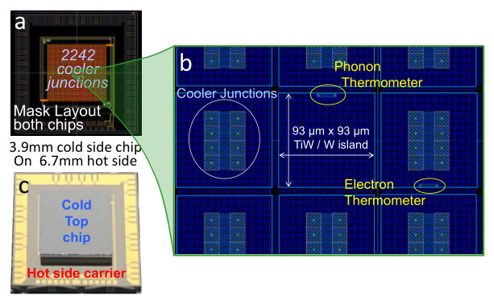
<figcaption class="paper-figure-caption"><b>Fig 1.</b> Figure 1 – (a) Lithography mask of the warm side and cold side chips, (b) Zoom-in view of the mask showing normal-metal islands and the SINIS junction pairs and the central normal-metal used as a phonon thermometer next to the cooler with the electron thermometer, (c) Photograph of a flip-chip bump-bonded cooler.</figcaption>
</figure>
<figure class="paper-figure-card">
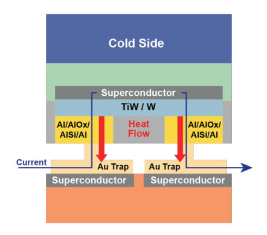
<figcaption class="paper-figure-caption"><b>Fig 2.</b> Figure 2 – Cross sectional schematic of a SINIS bump bonded cooler unit cell indicating the current and heat carrying quasi-particle flows.</figcaption>
</figure>
<figure class="paper-figure-card">
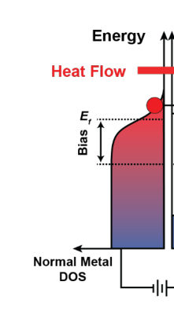
<figcaption class="paper-figure-caption"><b>Fig 3.</b> Figure 3 – Illustration of the cooling mechanism in an NIS tunneling junction from hot electrons</figcaption>
</figure>
<figure class="paper-figure-card">
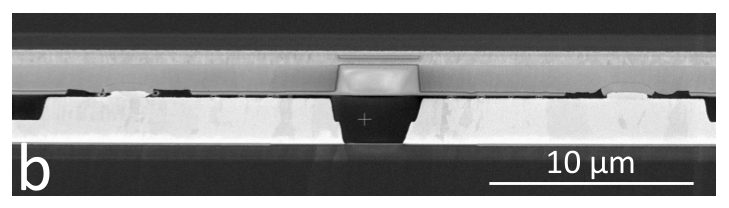
<figcaption class="paper-figure-caption"><b>Fig 4.</b> Figure 4 – (a) FIB cross section of a thermometer bump showing the bonded cold side to hot side chip. (b) Argon blade cross section of two neighboring coolers showing the resulting compression of the bumps resulting in 100 nm vacuum gap.</figcaption>
</figure>
<figure class="paper-figure-card">

<figcaption class="paper-figure-caption"><b>Fig 5.</b> Figure 4a shows a focused ion beam cut through a bonded cold-side chip to hot-side chip pair. This is an early version of a thermometer using a smaller width bump than the 2 μm by 2 μm eventually settled upon for the working devices but since the thermometer and coolers are fabricated simultaneously from the same layers, it shows all of the essential features of the device. The cold side TiW/W bilayer normal- metal was 410 nm thick, later embodiments thickened this to a total of 600 nm under the junction. Our</figcaption>
</figure>
</div>

<p><strong>Summary.</strong> This paper reports on the design and experimental realization of a solid-state refrigerator that cools silicon chips to sub-Kelvin temperatures using arrays of NIS superconducting junctions. The methodology involves modeling quasi-particle diffusion and meticulously engineering the interfaces to minimize parasitic heat leakage. The success demonstrates a significant advance in solid-state cryocooling technology.</p>
<p><strong>Why it may be interesting.</strong> The detailed modeling of non-equilibrium heat transport, involving energy filtering via superconducting gaps and diffusive quasi-particle dynamics, touches upon non-equilibrium statistical mechanics and energy relaxation processes relevant to quantum thermodynamics.</p>
<details>
<summary>Detailed structure</summary>
<p><strong>Main problem.</strong> To develop a scalable, solid-state refrigerator capable of cooling silicon chips to temperatures below 1 K by efficiently managing heat transfer and minimizing parasitic heat leakage.</p>
<p><strong>Main result.</strong> The authors demonstrated cooling of a silicon chip down to 70 mK and achieved a cooling of -97 mK, marking the first demonstration of sub-1 K cooling of an entire silicon chip using NIS junctions.</p>
<p><strong>Method.</strong> The work combines experimental fabrication of complex superconducting junctions with advanced 3D numerical simulations to model quasi-particle diffusion and interfacial heat flow.</p>
<p><strong>Model / system.</strong> The system is a chip-scale refrigerator built from Normal-metal/Insulator/Superconductor (NIS) junctions, configured as SINIS units, which operate by filtering electrons via the superconducting energy gap. Heat transport is modeled using diffusive quasi-particle flow, incorporating both Acoustic Mismatch Models (AMM) and specific interfacial heat flow equations.</p>
<p><strong>Key observables.</strong> Effective phonon temperature of the silicon chip, Coefficient of Performance (COP), and 2nd Law Efficiency.</p>
<p><strong>Important parameters / regimes.</strong> Operating temperatures down to 70 mK, junction resistance ($    ext{621 } \Omega\cdot\mu    ext{m}^2$), and the superconducting energy gap ($\Delta$).</p>
<p><strong>Assumptions / limitations.</strong> The primary assumptions involve modeling quasi-particle flow as diffusive and engineering the geometry to limit heat leakage, though some models ignore quasiparticle branching mixing effects.</p>
<p><strong>Figures summary.</strong> Figures illustrate the lithography masks and cross-sections of the cooler, schematics of the SINIS unit, and comparative plots showing simulated vs. experimental phonon temperature profiles validating the heat leakage model.</p>
<p><strong>Paper structure.</strong> The paper progresses from establishing the physical limitations of existing coolers to detailing the NIS junction physics, developing sophisticated models for heat leakage, and culminating in the measurement and validation of sub-Kelvin cooling performance metrics.</p>
</details>
<details>
<summary>Abstract</summary>
<p>Solid-state refrigerators using Normal-metal/Insulator/Superconductor (NIS) junctions have previously demonstrated excellent electron cooling but limited ability to cool phonons. The energy gap of the superconductor is used as an energy filter to allow higher than average energy electrons to preferentially tunnel from the normal-metal through the insulator into the superconductor where they travel as quasi-particles. Typically, the heat is moved and work is done to deposit hot quasi-particles into a normal-metal quasi-particle trap for rejection to the next refrigeration stage. Realizing that (1) the quasi-particles flow diffusively, driven by a concentration gradient in the electric field-free superconductor, and (2) that the undesirable backwards leaking of heat from the hot-side trap can be reduced by engineering the geometry and materials at the superconductor-to-trap interface, enhanced cooling can be achieved. Fabrication of the refrigerator was accomplished using a tungsten and titanium-tungsten alloy as the cold-side normal-metal, aluminum oxide as the insulator, aluminum as the superconductor, and gold as the trap, with the cold-side NIS portion being attached to the hot-side gold trap by bump bonding. The refrigerator consisted of 1121 junction pairs, each pair being an SINIS unit, all electrically connected in series. Using this we have measured the effective phonon temperature of a 3.9 mm x 3.9 mm x 0.65 mm silicon chip driven down to 70 mK from a bath temperature of 120 mK, and down to 174 mK from a 271 mK rejection temperature (a cooling of -97 mK). This is the first demonstration of the sub 1 K cooling of an entire silicon chip using NIS junctions.</p>
</details>
<p><sub><a href="#top">↑ back to top</a></sub></p>

<p><a id="paper-2608.18052"></a></p>
<h3 id="electronic-reconstruction-at-the-quasicrystal-moire-crossover-in-twisted-bilayer-graphene"><a href="http://arxiv.org/abs/2608.18052v1">Electronic Reconstruction at the Quasicrystal-Moiré Crossover in Twisted Bilayer Graphene</a></h3>
<p><strong>Authors:</strong> Kuo-En Chang, Aitor Garcia-Ruiz, Ta-Lei Chou, Yen-Ting Liu, Sheng-Chin Ho, Yu-Chiang Hsieh, Ching-Hua Kao, Chiu-Hua Huang, Ying-Mei Yang, Kenji Watanabe, Takashi Taniguchi, Ming-Wen Chu, Ming-Hao Liu, Tse-Ming Chen<br>
<strong>Type:</strong> both · <strong>Category:</strong> strongly correlated electrons · <strong>PDF:</strong> <a href="https://arxiv.org/pdf/2608.18052v1">https://arxiv.org/pdf/2608.18052v1</a><br>
<strong>Analysis basis:</strong> full PDF text, analyzed in chunks
<strong>Topic relevance:</strong> <code>analog quantum simulation</code> <strong>2/5</strong> · <code>Frenkel-Kontorova</code> <strong>1/5</strong> · <code>Keldysh / 2PI / non-Gaussian methods</code> <strong>1/5</strong></p>
<div class="figure-strip-hint">↔ Scroll figures horizontally</div>
<div class="paper-figures-scroll">
<figure class="paper-figure-card">
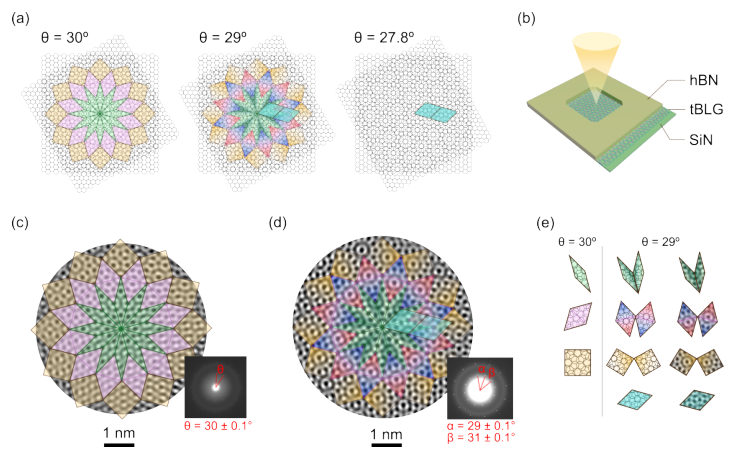
<figcaption class="paper-figure-caption"><b>Fig 1.</b> FIG. 1. (a) Schematic illustrations of atomic arrangements from the 30◦quasicrystal (left), with 12-fold dodecagonal symmetry described by a Stampfli tiling, to the 27.8◦commensurate moir´e superlattice (right). At θ = 29◦, the quasicrystalline order is gently perturbed, producing a crossover state that retains mirror-symmetric motifs of the dodecagonal structure while showing incipient local moir´e periodicity near the rotating center. (b) Schematic of the device structure incorporating a prepatterned access-window in the hBN pickup layer for atomic-resolution TEM imaging. (c) and (d) show the TEM image of 30◦and 29◦TBG, respectively. In (c), the image reveals a dodecagonal...</figcaption>
</figure>
<figure class="paper-figure-card">
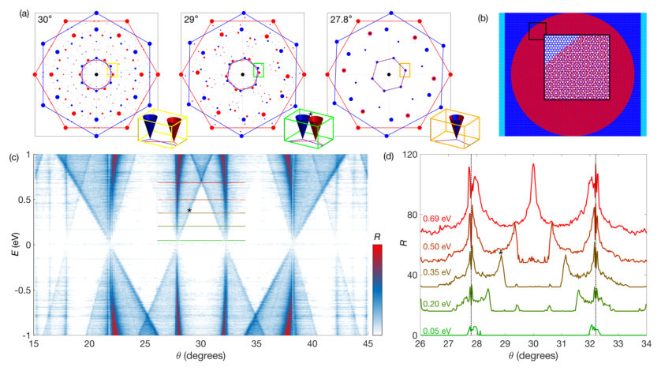
<figcaption class="paper-figure-caption"><b>Fig 2.</b> FIG. 2. (a) Sketch presenting the corners of the first Brillouin zone and the Umklapp-scattered points k = K(±) t/b + Gb −Gt. The size of the points reflects the amplitude of the spectral weight, exponentially decaying with Gb −Gt. The inset presents the low-energy decoupled dispersion, from the charge neutrality point to EF = 0.4 eV, around the second-order Umklapp-scattered dispersion. (b) Sketch of the device used in the transport simulations. The blue and red dots represent the atoms of the bottom and top flakes, and the cyan atoms represent the leads. (c) Reflection map for a 50 nm-wide device. (d) Reflection profile for 5 selected Fermi levels, for a 100 nm-wide nanoribbon, with the...</figcaption>
</figure>
<figure class="paper-figure-card">
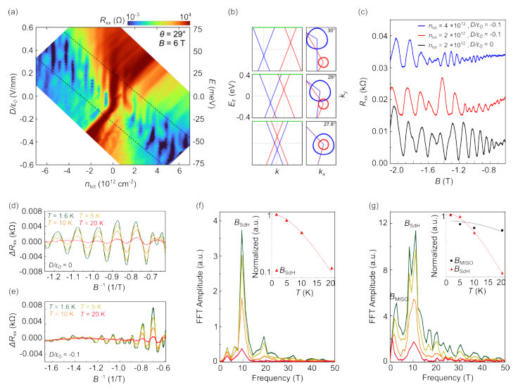
<figcaption class="paper-figure-caption"><b>Fig 3.</b> FIG. 3. (a) Longitudinal resistance Rxx of dual-gated 29◦TBG (device B29) as a function of carrier density ntot and displacement field D at B = 6 T and T = 1.6 K, revealing a distorted and asymmetric Landau level spectrum. (b) Calculated Fermi contours of second-order Umklapp Dirac-cone replicas at three twist angles under a displacement field (B = 0 T), obtained from a line cut at EF = 0.4 eV (green trace in the left panel). (c) Low-field longitudinal resistance Rxx as a function of magnetic field B for different displacement fields D and carrier densities ntot. (d) and (e) Temperature dependence of oscillations plotted against inverse magnetic field (1/B) at D/ε0 = 0 and D/ε0 = −0.1 V/nm,...</figcaption>
</figure>
<figure class="paper-figure-card">
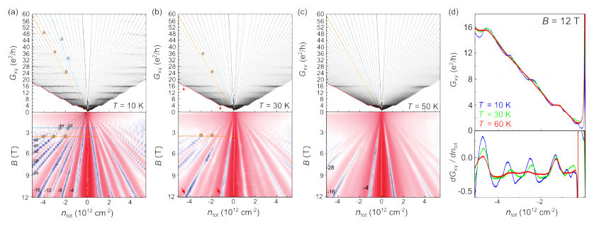
<figcaption class="paper-figure-caption"><b>Fig 4.</b> FIG. 4. (a)-(c) Hall conductance Gxy (upper panels) and longitudinal resistance Rxx (lower panels) as functions of carrier density and magnetic field at T = 10,30,50 K respectively. Star markers highlight the quantum Hall plateaus associated with the 12e2/h sequence in selected regimes. Dashed lines trace the corresponding Landau levels, making the sequence easier to follow. In (b), arrows indicate the comparatively robust ν = 4 and 16 plateaus. (d) Temperature dependence of Gxy (top) at B = 12 T and its derivative (bottom), illustrating the anomalous robustness of the 4e2/h and 16e2/h plateaus.</figcaption>
</figure>
</div>

<p><strong>Summary.</strong> This work demonstrates that twisted bilayer graphene exhibits rich electronic physics near the crossover between quasicrystalline and moiré order at $ heta \approx 29^\circ$. By combining TEM and magnetotransport, the authors show that quasiperiodicity fundamentally alters low-energy states, evidenced by an anomalous, temperature-dependent evolution of the Landau-level degeneracy. This challenges existing models by proving that strong interlayer coupling persists even outside the conventional moiré regime.</p>
<p><strong>Why it may be interesting.</strong> The observation of temperature-dependent, high-fold Landau level degeneracy in a quasiperiodic system provides a rich platform for studying emergent many-body physics and how geometric symmetry dictates correlated electronic behavior, relevant to understanding topological phases.</p>
<details>
<summary>Detailed structure</summary>
<p><strong>Main problem.</strong> The paper investigates the electronic reconstruction in twisted bilayer graphene (TBG) at a twist angle ($\approx 29^\circ$) that lies between the quasicrystalline and commensurate moiré regimes.</p>
<p><strong>Main result.</strong> The conventional view that large-angle TBG is electronically trivial breaks down, as the system exhibits strong, temperature-dependent interlayer hybridization leading to an anomalous evolution of Landau-level degeneracy from fourfold to twelvefold.</p>
<p><strong>Method.</strong> The study combines atomic-resolution Transmission Electron Microscopy (TEM) to map structural symmetry with magnetotransport measurements (Shubnikov-de Haas oscillations) to probe electronic states.</p>
<p><strong>Model / system.</strong> The physical system is TBG, focusing on the crossover regime near $29^\circ$. The physics involves Umklapp scattering mediating interlayer coupling, which fundamentally reshapes the low-energy electronic states beyond standard moiré band theory.</p>
<p><strong>Key observables.</strong> Landau-level degeneracy (evolving from 4-fold to 12-fold), magneto-intersubband oscillations (MISO), and the deviation from expected transport signatures at $29^\circ$.</p>
<p><strong>Important parameters / regimes.</strong> Twist angle ($  heta$), specifically the crossover point near $29^\circ$, and temperature ($T$) dependence.</p>
<p><strong>Assumptions / limitations.</strong> The analysis assumes that the observed transport anomalies are due to the interplay between quasiperiodic symmetry and interlayer Umklapp scattering, challenging models based solely on decoupled or purely commensurate structures.</p>
<p><strong>Figures summary.</strong> Figures illustrate the structural transition from 12-fold quasicrystal symmetry ($30^\circ$) through the $29^\circ$ crossover state to the commensurate moiré lattice ($27.8^\circ$), alongside transport maps showing the anomalous evolution of quantum Hall plateaus.</p>
<p><strong>Paper structure.</strong> The paper establishes the structural context via TEM, then uses magnetotransport measurements to probe the electronic consequences of the quasicrystal-moiré crossover, culminating in the observation of temperature-dependent Landau level degeneracy.</p>
</details>
<details>
<summary>Abstract</summary>
<p>Large twist angles in twisted bilayer graphene are widely expected to be electronically trivial, with negligible interlayer coupling and no electronic reconstruction, in contrast to the rich moiré-driven band reconstruction and correlated physics that emerge at small twist angles. Here, we show that this paradigm breaks down near a twist angle of 29°, where the system crosses over between quasicrystalline and commensurate order. Atomic-resolution transmission electron microscopy directly reveals the coexistence of near-dodecagonal quasicrystalline symmetry and emerging moiré periodicity, indicating an intermediate, nonperiodic structural regime. Magnetotransport measurements uncover strong interlayer hybridization mediated by Umklapp scattering, manifested by magneto-intersubband oscillations and a highly unconventional Landau-level spectrum. Remarkably, the Landau-level degeneracy evolves from 4- to 12-fold with increasing temperature, a behavior incompatible with two decoupled graphene monolayers. These findings establish large-angle twisted bilayer graphene as a platform where quasiperiodic symmetry fundamentally reshapes low-energy electronic states beyond the conventional moiré framework.</p>
</details>
<p><sub><a href="#top">↑ back to top</a></sub></p>

<p><a id="paper-2608.17840"></a></p>
<h3 id="the-deformed-image-vortex-ansatz-a-perturbation-aware-description-of-magnetic-vortices-in-in-plane-fields"><a href="http://arxiv.org/abs/2608.17840v1">The Deformed Image Vortex Ansatz: A Perturbation-Aware Description of Magnetic Vortices in In-Plane Fields</a></h3>
<p><strong>Authors:</strong> Thomas G. Coppée, Colin Ducarme, Simon de Wergifosse, Flavio Abreu Araujo<br>
<strong>Type:</strong> theory · <strong>Category:</strong> other · <strong>PDF:</strong> <a href="https://arxiv.org/pdf/2608.17840v1">https://arxiv.org/pdf/2608.17840v1</a><br>
<strong>Analysis basis:</strong> full PDF text, analyzed in chunks
<strong>Topic relevance:</strong> <code>Keldysh / 2PI / non-Gaussian methods</code> <strong>2/5</strong></p>
<div class="figure-strip-hint">↔ Scroll figures horizontally</div>
<div class="paper-figures-scroll">
<figure class="paper-figure-card">
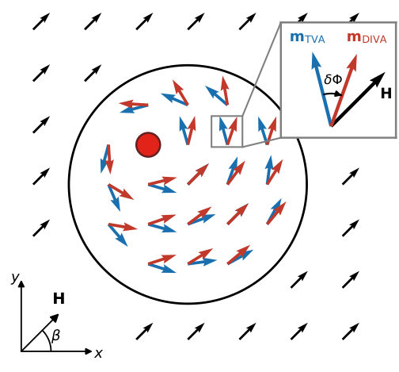
<figcaption class="paper-figure-caption"><b>Fig 1.</b> FIG. 1. Schematic of the DIVA construction for a magnetic vortex in a circular ferromagnetic nanodot under a uniform in-plane field. Black arrows indicate the in-plane field H, re- produced in the coordinate reference (bottom left) at an angle β from the x-axis. Inside the disk, the in-plane magnetization curls around the out-of-plane vortex core (red dot, here dis- placed from the disk center); two textures are overlaid on the same grid: the two-vortex ansatz (TVA, blue arrows), which represents only the displaced equilibrium vortex, and DIVA (red arrows), which additionally carries the field-induced defor- mation. The inset enlarges the boxed region and compares the local magnetization...</figcaption>
</figure>
<figure class="paper-figure-card">
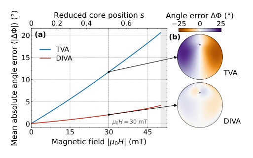
<figcaption class="paper-figure-caption"><b>Fig 2.</b> FIG. 2. Angular accuracy of the two ans¨atze for the t/R = 0.1 disk (R = 100 nm, t = 10 nm, Permalloy parameters, β = 0, C = +1). (a) Mean absolute angle error ⟨|∆Φ|⟩between the analytical ans¨atze and the relaxed MuMax+ configuration, as a function of the applied field |µ0H| (bottom axis) and of the corresponding reduced core position s = |X|/R (top axis). Blue line: two-vortex ansatz (TVA). Red line: deformed image vortex ansatz (DIVA). Curves are plotted up to vortex-core expulsion; the shaded band marks s &gt; 1 −A, beyond the validity window of Eq. (17) (Table I): for this geometry the core is expelled at s ≈0.8, before the window is reached, so no data enter the shaded region. (b)...</figcaption>
</figure>
<figure class="paper-figure-card">
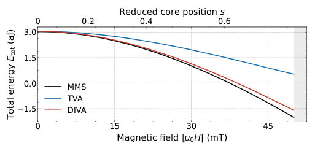
<figcaption class="paper-figure-caption"><b>Fig 3.</b> FIG. 4. Total micromagnetic energy Etot of the displaced vortex as a function of the applied field |µ0H| (bottom axis) and of the associated reduced core position s (top axis), for the t/R = 0.1 disk (R = 100 nm, t = 10 nm, Permalloy parameters, β = 0, C = +1). Black: full micromagnetic simulation (MMS). Blue: TVA evaluated at the MMS core position. Red: DIVA evaluated at the same position. Both ans¨atze carry the same Feldtkeller out-of-plane core, so they differ only through their in-plane textures. The shaded band marks s &gt; 1 −A, beyond the validity window of Eq. (17); as in Fig. 2, the core is expelled at s ≈0.8, before this window, so the shaded region contains no data.</figcaption>
</figure>
<figure class="paper-figure-card">
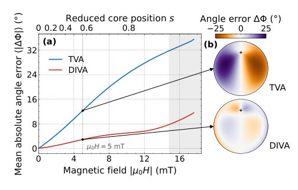
<figcaption class="paper-figure-caption"><b>Fig 4.</b> FIG. 3. Angular accuracy of the two ans¨atze for the t/R = 0.0125 disk (R = 400 nm, t = 5 nm, Permalloy parameters, β = 0, C = +1). (a) Mean absolute angle error ⟨|∆Φ|⟩between the analytical ans¨atze and the relaxed MuMax+ configuration, as a function of the applied field |µ0H| (bottom axis) and of the corresponding reduced core position s = |X|/R (top axis). Blue line: two-vortex ansatz (TVA). Red line: deformed image vortex ansatz (DIVA). Curves are plotted up to vortex- core expulsion; the shaded band marks s &gt; 1 −A, beyond the validity window of Eq. (17); unlike the t/R = 0.1 disk, here the core survives into this region before being expelled near the end of the sweep. (b) Spatial maps...</figcaption>
</figure>
</div>

<p><strong>Summary.</strong> This paper introduces the Deformed Image Vortex Ansatz (DIVA) to improve the theoretical description of magnetic vortices in nanodots under external fields. By building the field response directly into the magnetization profile, DIVA provides a significantly more accurate model than previous methods. The work validates this improved theory by comparing its predictions against detailed micromagnetic simulations.</p>
<p><strong>Why it may be interesting.</strong> While focused on classical magnetism, the methodology of building the perturbation response directly into the ansatz, rather than adding it as a correction, mirrors advanced techniques used in developing effective Hamiltonians or variational wavefunctions in quantum many-body physics.</p>
<details>
<summary>Detailed structure</summary>
<p><strong>Main problem.</strong> Existing magnetization ansätze fail to accurately describe how magnetic vortices deform when subjected to external in-plane magnetic fields.</p>
<p><strong>Main result.</strong> The proposed Deformed Image Vortex Ansatz (DIVA) significantly reduces the error in describing vortex deformation compared to previous ansätze, showing improvements by factors of 3 to 6 in angular deviation.</p>
<p><strong>Method.</strong> The authors developed a perturbation-aware ansatz (DIVA) and minimized the total energy functional by solving a resulting differential equation for the radial profile of the deformation.</p>
<p><strong>Model / system.</strong> The study models magnetic vortices in thin ferromagnetic nanodots (Permalloy) subjected to an external in-plane field. The physics is governed by minimizing the total energy functional, which includes exchange, Zeeman, and magnetostatic terms.</p>
<p><strong>Key observables.</strong> Disk-averaged angular deviation ($\delta\Phi$), total-energy deviation, and the radial profile function $f(r)$.</p>
<p><strong>Important parameters / regimes.</strong> Aspect ratio ($t/R$), external field strength ($H$), and material parameters like saturation magnetization ($M_s$).</p>
<p><strong>Assumptions / limitations.</strong> The deformation is assumed to be dominated by the $m=1$ harmonic, and the magnetostatic energy is approximated using a local functional form.</p>
<p><strong>Figures summary.</strong> Figure 1 schematically compares the local magnetization directions for the two-vortex ansatz and DIVA under an in-plane field. Other figures show energy decompositions and the dependence of the demagnetizing factor on aspect ratio.</p>
<p><strong>Paper structure.</strong> The paper first identifies the limitation of existing ansätze, introduces the DIVA, derives the governing radial equation by energy minimization, and finally benchmarks the solution against micromagnetic simulations to validate the improved accuracy.</p>
</details>
<details>
<summary>Abstract</summary>
<p>Thiele-based descriptions of magnetic vortex dynamics in thin ferromagnetic nanodots rely on magnetization ansätze that describe the equilibrium texture but cannot represent perturbation-induced deformations. We introduce the Deformed Image Vortex Ansatz (DIVA): a perturbation-aware ansatz in which the response to an external perturbation is built into the magnetization profile itself, rather than appended to the dynamics as a correction. Here, we demonstrate the concept for a uniform, stationary in-plane field applied to a Permalloy nanodot, for which the deformation is analytically tractable. A symmetry-based perturbative expansion identifies the leading deformation as a single $m = 1$ harmonic around the disk, while energy minimization and a dominant-balance analysis yield a closed-form interpolant for the radial profile. Benchmarked against micromagnetic simulations on Permalloy disks of aspect ratio $t/R = 0.1$ and $0.0125$, this realization reduces the disk-averaged angular deviation by a factor of 3 to 6 relative to the two-vortex ansatz, depending on geometry and field, and reduces the total-energy deviation by about a factor of six in the thicker disk.</p>
</details>
<p><sub><a href="#top">↑ back to top</a></sub></p>

<p><a id="paper-2608.17061"></a></p>
<h3 id="emissivity-by-design-geometric-mesh-inductance-governs-thermal-radiation-in-metallic-nanowire-networks"><a href="http://arxiv.org/abs/2608.17061v1">Emissivity by Design: Geometric Mesh Inductance Governs Thermal Radiation in Metallic Nanowire Networks</a></h3>
<p><strong>Authors:</strong> Amaury Baret, Ngoc Duy Nguyen<br>
<strong>Type:</strong> theory · <strong>Category:</strong> other · <strong>PDF:</strong> <a href="https://arxiv.org/pdf/2608.17061v1">https://arxiv.org/pdf/2608.17061v1</a><br>
<strong>Analysis basis:</strong> full PDF text, analyzed in chunks
<strong>Topic relevance:</strong> <code>analog quantum simulation</code> <strong>1/5</strong> · <code>interference shaping light</code> <strong>1/5</strong></p>
<div class="figure-strip-hint">↔ Scroll figures horizontally</div>
<div class="paper-figures-scroll">
<figure class="paper-figure-card">
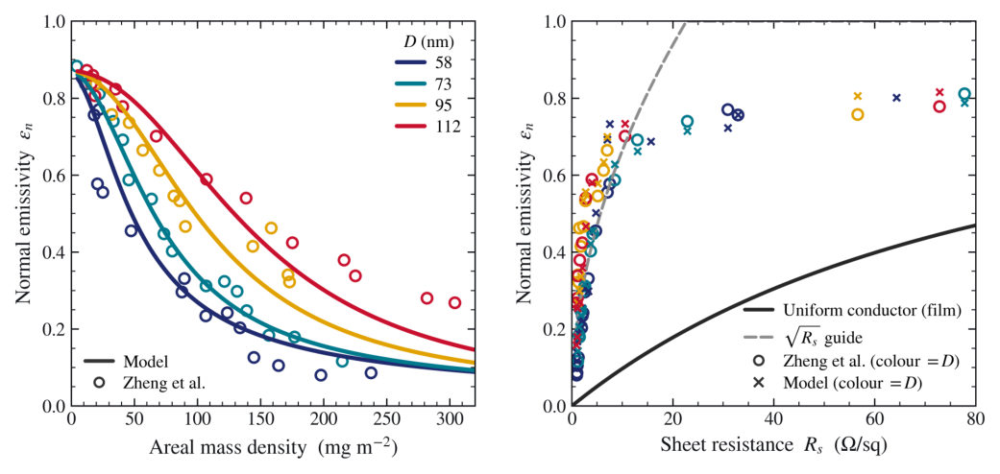
<figcaption class="paper-figure-caption"><b>Fig 1.</b> FIG. 1. The phenomenon and the puzzle. (a) Normal emissivity versus areal mass density for four diameters; open symbols are the data of Zheng et al. [1] and solid lines the model with one global parameter set, thinner wires dropping faster as predicted by g ∝D2. (b) The puzzle: emissivity versus sheet resistance follows a √Rs (Hagen–Rubens) branch at low Rs but deviates above ∼15 Ω/sq, lying far above the emissivity a uniform conductor of the same Rs would have (solid black). Crosses are the model prediction (coloured by D), placed at each sample’s measured Rs, reproducing the same deviation from the uniform-conductor branch.</figcaption>
</figure>
<figure class="paper-figure-card">
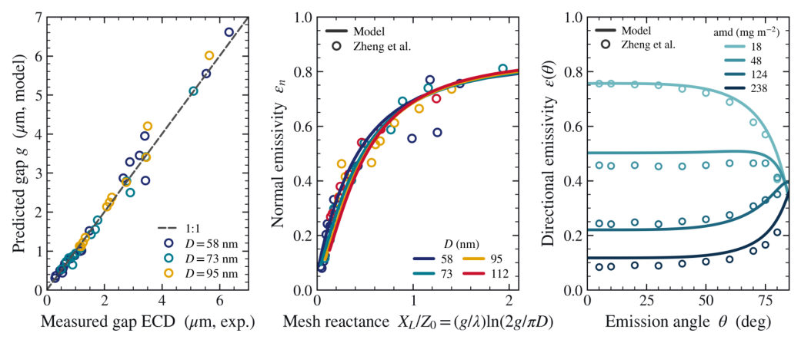
<figcaption class="paper-figure-caption"><b>Fig 2.</b> FIG. 2. The gap is the master variable. (a) The gap predicted from areal density and diameter [Eq. (2)] against the measured mean gap (equivalent-circle diameter of the inter-wire voids; see SI) of Zheng et al. [1]; a single prefactor kg ≈1.3 collapses the 58, 73, 95 nm diameters onto the 1:1 line. The 112 nm gap data are omitted: their gap-area column in the source file is internally inconsistent (median&gt;mean) and yields a spurious factor-∼2 offset, so they are excluded from this geometric test only; the 112 nm emissivity is still reproduced with the same parameters (see SI). (b) Universal collapse: plotted against the dimensionless mesh reactance XL/Z0 = (g/λ) ln(2g/πD), the emissivity...</figcaption>
</figure>
<figure class="paper-figure-card">
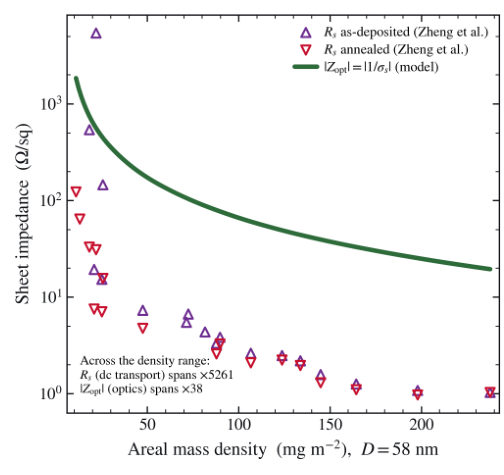
<figcaption class="paper-figure-caption"><b>Fig 3.</b> FIG. 3. Optics and DC transport decouple. Two impedances of the same D = 58 nm network are plotted against areal density on common axes: the measured DC sheet resistance Rs (the impedance the DC current sees; as-deposited, up- triangles; annealed, down-triangles) and the modeled optical sheet impedance |Zopt| = |1/σs| that the thermal-IR wave sees (line). If the emissivity were governed by Rs, the two would track; instead they pull apart. Across the samples for which Rs was measured, densification makes the as-deposited Rs fall by ×5261—or ×525 once the single most resistive, near- threshold film is set aside—the steep junction/percolation sig- nature, whereas over that same density range...</figcaption>
</figure>
</div>

<p><strong>Summary.</strong> This work proposes that the thermal emissivity of metallic nanowire networks is not governed by simple DC resistance but by a geometric inductance ($X_L$) derived from the average inter-wire gap ($g$). By modeling the network as an inductive mesh, the authors successfully unify disparate experimental results onto a single universal curve, establishing the gap size as the master design variable for radiative properties.</p>
<p><strong>Why it may be interesting.</strong> While focused on classical electromagnetism and condensed matter optics, the concept of a single, non-material-constant geometric parameter ($g$) controlling a complex macroscopic property (emissivity) is analogous to finding an effective Hamiltonian or controlling parameter in open quantum systems.</p>
<details>
<summary>Detailed structure</summary>
<p><strong>Main problem.</strong> The paper aims to explain the previously unexplained regularities in the thermal infrared emissivity of metallic nanowire networks, which are candidates for low-emissivity transparent electrodes.</p>
<p><strong>Main result.</strong> The thermal emissivity is shown to be governed by a geometric inductance ($X_L$) derived from the average inter-wire gap ($g$), collapsing multiple experimental datasets onto a single universal curve.</p>
<p><strong>Method.</strong> The authors developed a model based on transmission-line theory and magnetostatics, treating the network as an inductive mesh structure rather than relying solely on DC electrical transport properties.</p>
<p><strong>Model / system.</strong> The system is metallic nanowire networks (e.g., AgNWs) forming a mesh. The key theoretical element is the geometric inductance $X_L = Z_0 (g/\lambda) \ln(2g/\pi D)$, which acts as the master variable controlling the optical response.</p>
<p><strong>Key observables.</strong> Thermal infrared emissivity ($\epsilon$), optical impedance ($Z_{opt}$), and sheet resistance ($R_s$).</p>
<p><strong>Important parameters / regimes.</strong> Average inter-wire gap ($g$), thermal wavelength ($\lambda$), and wire diameter ($D$).</p>
<p><strong>Assumptions / limitations.</strong> The optical response is governed by the local geometric inductance ($X_L$), which is assumed to be the dominant factor, decoupling the optical behavior from the global electrical percolation threshold.</p>
<p><strong>Figures summary.</strong> Figures demonstrate the universal collapse of emissivity vs. $X_L/Z_0$, show the divergence between $R_s$ and $|Z_{opt}|$ at high density, and illustrate the length-independence of the optical response.</p>
<p><strong>Paper structure.</strong> The paper establishes the puzzle (anomalous $\epsilon$ dependence), develops the theory based on geometric inductance ($X_L$), validates $X_L$ by reproducing multiple datasets, and contrasts this finding with failing models like the Hanauer model.</p>
</details>
<details>
<summary>Abstract</summary>
<p>The thermal infrared emissivity of metallic nanowire networks - the property that makes them candidate low-emissivity transparent electrodes - follows regularities that have resisted physical explanation: a strong wire-diameter dependence with no wire-length dependence, a correlation with sheet resistance that breaks down above ~15 ohm/sq, and an angular signature that turns from dielectric-like to metallic as the network densifies. We show that all of them follow from one local geometric length, the average inter-wire gap g, acting through the geometric inductance of a mesh finer than the thermal wavelength: $X_L = Z_0 (g/λ) \ln(2g/πD)$, a parameter-free reactance that exceeds the ohmic loss and, unlike the DC sheet resistance, stays finite instead of diverging at the percolation threshold. Since the gap is fixed by areal density and wire diameter alone, the optics is length-independent and decoupled from percolative transport; what has been read as a second, optical percolation is instead a smooth impedance crossing. With a single fitted parameter the theory reproduces 56 silver-nanowire samples across four diameters to a mean absolute error of 0.04, collapses them onto one universal curve, and - unchanged - predicts the emissivity-transmittance data of five independent groups and the measured spectral emissivity, including the silica phonon band. Because this reactance contains no material constant, the inter-wire gap emerges as the master design variable for the radiative properties of metallic nanowire transparent conductors.</p>
</details>
<p><sub><a href="#top">↑ back to top</a></sub></p>

<p><a id="paper-2608.17211"></a></p>
<h3 id="variable-mass-sine-gordon-with-point-defects-integrability-soliton-transmission-and-quasi-conservation"><a href="http://arxiv.org/abs/2608.17211v1">Variable-mass sine-Gordon with point defects: integrability, soliton transmission, and quasi-conservation</a></h3>
<p><strong>Authors:</strong> A. R. Aguirre, H. Blas, H. F. Callisaya, M. C. de Oliveira<br>
<strong>Type:</strong> theory · <strong>Category:</strong> other · <strong>PDF:</strong> <a href="https://arxiv.org/pdf/2608.17211v1">https://arxiv.org/pdf/2608.17211v1</a><br>
<strong>Analysis basis:</strong> full PDF text, analyzed in chunks
<strong>Topic relevance:</strong> <code>Frenkel-Kontorova</code> <strong>1/5</strong></p>
<div class="figure-strip-hint">↔ Scroll figures horizontally</div>
<div class="paper-figures-scroll">
<figure class="paper-figure-card">
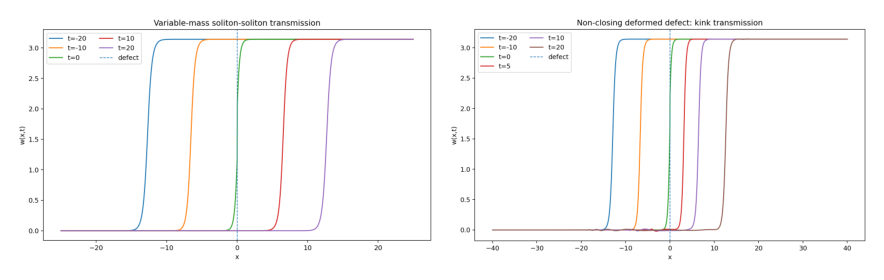
<figcaption class="paper-figure-caption"><b>Fig 1.</b> Figure 1: (color online) The kink-kink transmission for m0 = 1; ǫ0 = 0.3; ǫ1 = 0.5; κ0 = 0.5; κ1 =</figcaption>
</figure>
<figure class="paper-figure-card">

<figcaption class="paper-figure-caption"><b>Fig 2.</b> Fig. 2 shows soliton–antisoliton transmission through the defect. The incoming positive-orientation</figcaption>
</figure>
<figure class="paper-figure-card">

<figcaption class="paper-figure-caption"><b>Fig 3.</b> Fig. 3 (right panel) one has residual reflected and radiative components at t = 20 for the soliton–antisoliton</figcaption>
</figure>
<figure class="paper-figure-card">

<figcaption class="paper-figure-caption"><b>Fig 4.</b> Fig. 4 presents the plots of the anomalies (4.27) and (4.30) as functions of t associated with the non-</figcaption>
</figure>
<figure class="paper-figure-card">
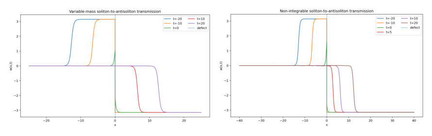
<figcaption class="paper-figure-caption"><b>Fig 5.</b> Figure 2: (color online) Kink-antikink transmission for m0 = 1; ǫ0 = 0.3; ǫ1 = 0.5; κ0 = 0.5; κ1 = 0.7.</figcaption>
</figure>
</div>

<p><strong>Summary.</strong> This paper analyzes the variable-mass sine-Gordon model incorporating point defects to study its conservation laws. Using advanced techniques from integrable systems, the authors show that exact integrability is lost unless specific parameters match, leading to a regime of charge-dependent quasi-conservation. This provides a theoretical framework for understanding soliton transport in inhomogeneous media.</p>
<p><strong>Why it may be interesting.</strong> The framework establishes a detailed mechanism for how exact integrability breaks down into controlled quasi-conservation due to defects, which has direct implications for modeling physical systems like Josephson junctions or nonlinear optics.</p>
<details>
<summary>Detailed structure</summary>
<p><strong>Main problem.</strong> The study investigates the integrability, soliton transmission, and quasi-conservation properties of the variable-mass sine-Gordon model when point defects are introduced.</p>
<p><strong>Main result.</strong> Exact defect integrability is maintained only when a specific closure condition ($\alphaeta = 1$) is met; otherwise, the system exhibits charge-dependent quasi-conservation.</p>
<p><strong>Method.</strong> The authors employed Lax and Bäcklund-gauge formulations to derive conserved charges, followed by numerical simulations on a two-half-line geometry to analyze defect-induced anomalies.</p>
<p><strong>Model / system.</strong> The model is the variable-mass sine-Gordon equation with point defects, which is analyzed using techniques from integrable systems theory, including defect matrices and sewing conditions.</p>
<p><strong>Key observables.</strong> Conserved charges (Energy, Momentum), the soliton transmission factor ($z$), and defect-localized anomalies.</p>
<p><strong>Important parameters / regimes.</strong> Deformation parameters $\alpha$ and $eta$, which control the transition between integrable and non-integrable defect regimes.</p>
<p><strong>Assumptions / limitations.</strong> The analysis assumes the existence of a Lax pair and that outer boundaries are far enough from the defect such that generated signals do not return during the simulation time.</p>
<p><strong>Figures summary.</strong> The notes reference figures showing finite-difference results, illustrating the transmission/conversion regimes and the effects of non-integrable defects.</p>
<p><strong>Paper structure.</strong> The work progresses from establishing the infinite hierarchy of conserved charges in the standard sine-Gordon model using Lax pairs, to generalizing this to the variable-mass case, and finally introducing deformations ($\alpha, eta$) and numerical simulations to study the transition to quasi-conservation at defects.</p>
</details>
<details>
<summary>Abstract</summary>
<p>We study integrable variable-mass sine-Gordon model (vmSG) with point defects. Using the Lax and Bäcklund-gauge formulations, we construct type-I and type-II defect matrices, derive the corresponding sewing conditions, and generate the bulk and defect contributions to an infinite hierarchy of conserved charges. The lowest members reduce to the standard sine-Gordon energy and momentum in the homogeneous limit, while for inhomogeneous backgrounds they define integrability-generated energy- and momentum-type quantities. Defect compatibility imposes matching conditions on the variable-mass functions across the defect. An analytical transmission factor $z$ characterizes soliton transmission, topological conversion, and absorption/emission processes. We then deform the type-I sewing conditions by parameters $α$ and $β$ and derive the associated defect anomalies. Consistent one-soliton transmission is recovered for $αβ=1$, whereas for $αβ\neq 1$ parity-centered kink-kink and kink-antikink transmissions display vanishing lowest order integrated anomalies but no generic vanishing at higher order. Numerical simulations reproduce the integrable transmission/conversion regimes and show that non-integrable defects generate weak radiative tails and lowest order quasi-conserved charges, while quasi-conservation of the higher order charges remains unestablished. These results elucidate how exact defect integrability deforms into charge-dependent quasi-conservation and establish a framework for defect-controlled soliton transport in inhomogeneous media, with potential applications to nonuniform Josephson junctions, magnetic and nonlinear-optical systems, and effective molecular and DNA models.</p>
</details>
<p><sub><a href="#top">↑ back to top</a></sub></p>

<p><a id="paper-2608.17104"></a></p>
<h3 id="vector-akhmediev-breathers-and-state-transitions-in-the-degenerate-and-nondegenerate-regimes-for-the-coupled-sasa-satsuma-system"><a href="http://arxiv.org/abs/2608.17104v1">Vector Akhmediev Breathers and State Transitions in the Degenerate and Nondegenerate Regimes for the Coupled Sasa-Satsuma System</a></h3>
<p><strong>Authors:</strong> Mengyuan Lan, Lei Wang, Yinchuan Zhao<br>
<strong>Type:</strong> theory · <strong>Category:</strong> other · <strong>PDF:</strong> <a href="https://arxiv.org/pdf/2608.17104v1">https://arxiv.org/pdf/2608.17104v1</a><br>
<strong>Analysis basis:</strong> full PDF text, analyzed in chunks
<strong>Topic relevance:</strong> <code>driven-dissipative phase transition</code> <strong>1/5</strong></p>
<div class="figure-strip-hint">↔ Scroll figures horizontally</div>
<div class="paper-figures-scroll">
<figure class="paper-figure-card">
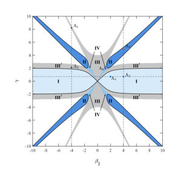
<figcaption class="paper-figure-caption"><b>Fig 1.</b> FIG. 1. Existence diagram in the (β2, γ) plane for β1 = 0, with c1 = c2 = 1 and α = 0. Gray and blue re- gions denote degenerate and nondegenerate regimes, respec- tively. The annotated coordinate points A1 = (−4, 8.2), A2 = (−4, 2.1), A3 = (4, 0.7), A4 = (2, 0.7), A5 = (4, 5), and A6 = (1.21402, 1.93992) are used in the analyses below. Dashed vertical and horizontal lines indicate common values of β2 and γ, respectively.</figcaption>
</figure>
<figure class="paper-figure-card">
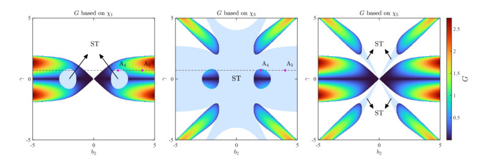
<figcaption class="paper-figure-caption"><b>Fig 2.</b> FIG. 2. Branch-resolved MI gain in the (β2, γ) plane for β1 = 0, with c1 = c2 = 1 and α = 0. The three panels correspond to the eigenvalue-branch pairs represented by χ1, χ3, and χ5, respectively. Nonzero gain identifies AB-supporting branches, while “ST” denotes admissible branches satisfying the state-transition condition and reducing to periodic-wave states. The annotated coordinate points A3 = (4, 0.7) and A4 = (2, 0.7) are used in the representative analyses below, with the dashed horizontal line indicating their common γ = 0.7.</figcaption>
</figure>
<figure class="paper-figure-card">
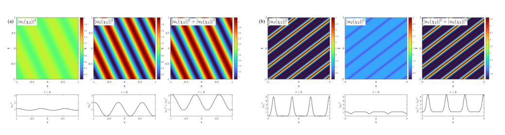
<figcaption class="paper-figure-caption"><b>Fig 3.</b> FIG. 3. State-transition periodic waves in the degenerate regime for β1 = 0, corresponding to points A1 and A2 in Fig. 1. (a) Region III at A1 = (−4, 8.2), with χa = χ3 = −4.1 −0.1366i and χb = 4.1 −0.1366i. (b) Region III′ at A2 = (−4, 2.1), with χa = χ3 = −1.0500 −0.8309i and χb = 1.0500 −0.8309i. In both cases, Re(χa) = −γ/2, with χ4 forming the other member of the unique admissible eigenvalue-branch pair. The intensity modulations are synchronous in region III and opposite in region III′. For each case, the upper row shows |u1|2, |u2|2, and |u1|2 + |u2|2 from left to right, and the lower row gives the corresponding t = 0 cross sections.</figcaption>
</figure>
<figure class="paper-figure-card">
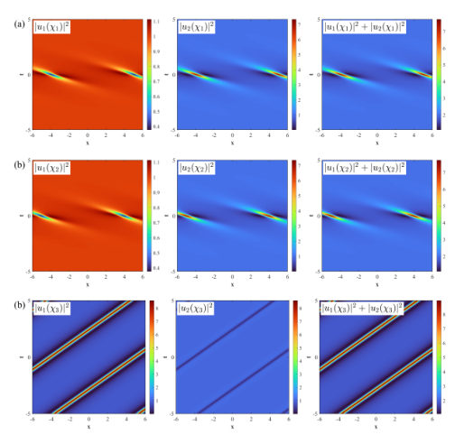
<figcaption class="paper-figure-caption"><b>Fig 4.</b> FIG. 4. Representative solutions at A3 = (4, 0.7) in the outer subregion of region I for β1 = 0. (a) χa = χ1 = 3.6254 − 0.8744i, χb = 4.3254 −0.8744i. (b) χa = χ2 = −4.3254 + 0.8744i, χb = −3.6254 + 0.8744i. (c) χa = χ3 = −0.3500 − 1.3077i, χb = 0.3500 −1.3077i. The branches represented by χ1 and χ2 support ABs, whereas χ3 satisfies Re(χa) = −γ/2 and lies on the state-transition locus, giving a periodic-wave state. In each row, the panels from left to right show |u1|2, |u2|2, and |u1|2 + |u2|2.</figcaption>
</figure>
<figure class="paper-figure-card">
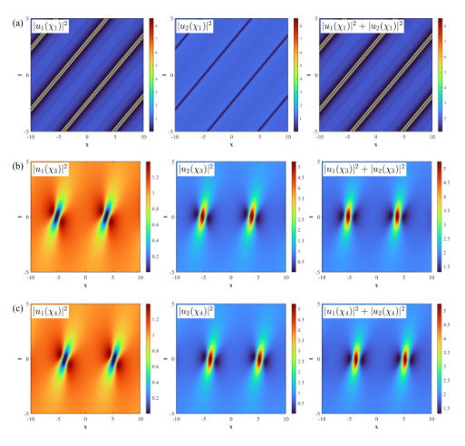
<figcaption class="paper-figure-caption"><b>Fig 5.</b> FIG. 5. Representative solutions at A4 = (2, 0.7) in an inner oval subregion of region I for β1 = 0. (a) χa = χ1 = −0.3500 + 1.2744i, χb = 0.3500 + 1.2744i. (b) χa = χ3 = 1.5334 + 0.7425i, χb = 2.2334 + 0.7425i. (c) χa = χ4 = −2.2334 −0.7425i, χb = −1.5334 −0.7425i. Here, the branch represented by χ1 satisfies Re(χa) = −γ/2 and lies on the state-transition locus, whereas those represented by χ3 and χ4 remain on AB branches. In each row, the panels from left to right show |u1|2, |u2|2, and |u1|2 + |u2|2.</figcaption>
</figure>
</div>

<p><strong>Summary.</strong> This paper analyzes vector Akhmediev breathers in the coupled Sasa-Satsuma system, a model for coupled optical pulses. By comparing the spectral analysis of breathers with the linear modulation instability spectrum, the authors establish a deep link: the condition for zero linear gain precisely corresponds to the state-transition condition for the breathers. This unifies the understanding of stable and unstable wave states in this nonlinear system.</p>
<p><strong>Why it may be interesting.</strong> The connection drawn between the state-transition condition (from breathers) and the zero-gain condition (from MI) provides a powerful unified diagnostic tool for understanding nonlinear wave dynamics in optical systems.</p>
<details>
<summary>Detailed structure</summary>
<p><strong>Main problem.</strong> The paper investigates the existence and properties of vector Akhmediev breathers (ABs) and the associated state transitions within the coupled Sasa-Satsuma (CSS) system.</p>
<p><strong>Main result.</strong> The analysis establishes a direct correspondence between admissible characteristic-root pairs derived from the spectral analysis and the linear Modulation Instability (MI) branches, showing that zero-gain MI corresponds to periodic-wave states.</p>
<p><strong>Method.</strong> The study employs spectral analysis using Lax pairs, Darboux transformations to construct breathers, and linear stability analysis to determine the MI gain spectrum.</p>
<p><strong>Model / system.</strong> The governing equation is the coupled Sasa-Satsuma (CSS) system, which models the coupled propagation of two ultrashort optical pulse envelopes. The analysis is performed across three distinct carrier-wavenumber configurations.</p>
<p><strong>Key observables.</strong> Vector Akhmediev Breathers (ABs), MI gain $G(\chi_a; \gamma)$, and the localization variable $\Psi$.</p>
<p><strong>Important parameters / regimes.</strong> Carrier wavenumbers ($eta_1, eta_2$), spectral parameters ($\lambda$), and the degeneracy/nondegeneracy of the background state.</p>
<p><strong>Assumptions / limitations.</strong> The analysis assumes specific configurations for the background carrier wavenumbers and relies on the equivalence between MI conditions and characteristic-root equations.</p>
<p><strong>Figures summary.</strong> Figure 1 illustrates the existence diagram in the $(eta_2, \gamma)$ plane for the case $eta_1 = 0$, distinguishing between degenerate and nondegenerate regimes.</p>
<p><strong>Paper structure.</strong> The paper follows a structure moving from spectral analysis (defining the background), to classifying AB branches based on wavenumber configurations, then analyzing the linear modulation instability (MI) spectrum, and finally establishing the correspondence between the two.</p>
</details>
<details>
<summary>Abstract</summary>
<p>We investigate vector Akhmediev breathers (ABs) in the degenerate and nondegenerate regimes for the coupled Sasa-Satsuma system describing two coupled ultrashort optical pulse envelopes. Based on the carrier-wavenumber relations of the two-component background, we examine three configurations: a single vanishing wavenumber, a pair of opposite wavenumbers, and two nonzero wavenumbers of unequal magnitudes. These configurations admit distinct maximal degrees of nondegeneracy. For each configuration, we derive the reduced spectral equations, construct the existence diagrams, and compare the resulting branches with the modulation-instability gain spectra. Owing to the distinct carrier-wavenumber symmetries, nondegenerate-type modes can occur in spectrally degenerate regions, whereas degenerate-type ones may also appear in spectrally nondegenerate regions. Moreover, all admissible branches in the degenerate regimes satisfy the state-transition condition and correspond to periodic-wave states, while such branches are also present in nondegenerate regimes. Direct numerical simulations of representative solutions further confirm the analytical predictions.</p>
</details>
<p><sub><a href="#top">↑ back to top</a></sub></p>
<h3 id="other-secondary-papers-2">Other secondary papers (2)</h3>
<details>
<summary>Show other secondary papers</summary>

<p><a id="paper-2608.17408"></a></p>
<h3 id="giant-bandgap-pulsation-driven-by-hotspot-breathing-phonons-in-a-flat-band-solid"><a href="http://arxiv.org/abs/2608.17408v1">Giant Bandgap Pulsation Driven by Hotspot Breathing Phonons in a Flat-Band Solid</a></h3>
<p><strong>Authors:</strong> Wenjie Liu, Huaxin Wu, Jiyang Fan<br>
<strong>Type:</strong> theory · <strong>Category:</strong> other · <strong>PDF:</strong> <a href="https://arxiv.org/pdf/2608.17408v1">https://arxiv.org/pdf/2608.17408v1</a><br>
<strong>Analysis basis:</strong> full PDF text, analyzed in chunks</p>
<div class="figure-strip-hint">↔ Scroll figures horizontally</div>
<div class="paper-figures-scroll">
<figure class="paper-figure-card">
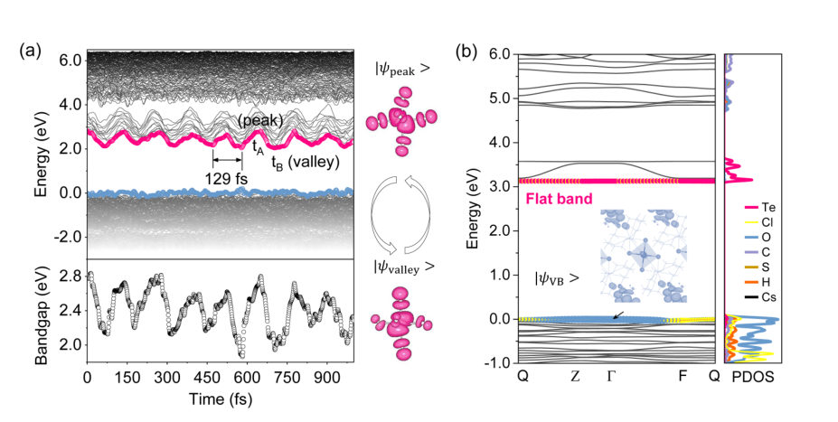
<figcaption class="paper-figure-caption"><b>Fig 1.</b> FIG. 1. Spontaneous temporal dynamics of electronic states and band structure of the DMSO crystal. (a) Temporal evolution of the electronic energy levels extracted from AIMD trajectories using the 2×2×1 supercell (452 atoms) at thermal equilibrium (300 K), with the average valence-band maximum (VBM) set to 0 eV. The conduction-band minimum (CBM) and the subsequent bandgap exhibit large-amplitude periodic oscillations (period: ~129 fs). The right panels show the isosurfaces of the charge density of the CBM state at two representative time points: a peak (tA) and a valley (tB) during the oscillation. (b) Electronic band structure and projected density of states (PDOS). Pink, yellow, and blue...</figcaption>
</figure>
<figure class="paper-figure-card">

<figcaption class="paper-figure-caption"><b>Fig 2.</b> FIG. 2. Raman spectra and A1g-mode breathing vibration of the DMSO crystal. (a) Measured and simulated Raman spectra of the DMSO crystal (upper panel), alongside the corresponding phonon density of states decomposed into atomic contributions (lower panel). The prominent A1g peak at 262 cm−1 (corresponding to a period of 127 fs) is clearly identified. (b) Schematic illustration of the Γ-point A1g breathing vibration of the inorganic [TeCl6]2− octahedral unit. This mode drives an in-phase expansion and contraction of the octahedral cage, periodically pulsating the local crystal field.</figcaption>
</figure>
<figure class="paper-figure-card">

<figcaption class="paper-figure-caption"><b>Fig 3.</b> Fig. 3. Temporal correlation between the Γ-point A1g breathing motion and CBM dynamics. (a) Temporal evolution of the projected Γ-point A1g-mode coefficient ci(t) and the CBM energy obtained from a 300 K AIMD simulation using a supercell 2×2×2 containing 904 atoms. The two quantities exhibit a clear cycle-by-cycle correspondence. (b) Autocorrelation functions of the CBM energy obtained from the 2×2×1 and 2×2×2 AIMD simulations, both showing a pronounced oscillatory component with a characteristic period of approximately 127 fs.</figcaption>
</figure>
<figure class="paper-figure-card">

<figcaption class="paper-figure-caption"><b>Fig 4.</b> FIG. 4. Microscopic mechanism underlying the Γ-point A1g-driven bandgap dynamics. (a) Atom-projected vibrational density of states (VDOS) of the DMSO crystal. (b) Temporal evolution of atomic displacements projected onto four dominant Γ-point phonon modes and the CBM energy level, obtained from the 2×2×1 AIMD trajectory. (c) First-principles electron– phonon coupling strength between the CBM state and each phonon mode along four phonon dispersion branches. (d) Temporal evolution of the octahedral volume alongside its decomposition into individual Γ-point phonon mode contributions. (e) Evolution of the CBM energy driven by each individual phonon mode over one vibrational period of Γ-point...</figcaption>
</figure>
<figure class="paper-figure-card">

<figcaption class="paper-figure-caption"><b>Fig 5.</b> Fig. 5. Time-dependent photon absorption and dynamic orbital hybridization in the DMSO crystal. (a) Two-dimensional contour plot showing the temporal evolution of the photon absorption spectrum of the DMSO crystal along a segment of the AIMD trajectory at 300 K. The absorption spectra were computed within the independent-particle approximation using the frequency-dependent dielectric function, and explicitly include the optical transition matrix elements implemented in the PAW formalism. (b) Absorption coefficient as a function of photon energy at the marked t_max and t_min time points in (a). Top and right panels show isosurfaces of the conduction band and valence band states that...</figcaption>
</figure>
</div>
<p><strong>Summary.</strong> This study reveals that the bandgap of a flat-band solid can undergo giant, periodic pulsations at room temperature due to lattice vibrations. The effect is governed by a dual selection mechanism: the strong coupling of the $  ext{A}_{1g}$ breathing phonon and the phase coherence of the $\Gamma$-point lattice motion. This demonstrates that ordered electronic responses can emerge from seemingly disordered thermal fluctuations.</p>
<p><strong>Why it may be interesting.</strong> This work connects lattice dynamics (phonons) directly to electronic structure modulation on femtosecond timescales, providing a mechanism for intrinsic, thermally driven ultrafast electronic functionality, which is relevant to understanding energy conversion in complex materials.</p>
<details>
<summary>Detailed structure</summary>
<p><strong>Main problem.</strong> The study investigates whether intrinsic, thermal lattice vibrations alone can induce a pronounced, periodic, and large-amplitude pulsation in the electronic bandgap of a solid, challenging the view of the bandgap as a static property.</p>
<p><strong>Main result.</strong> A giant bandgap pulsation ($\sim 0.95$ eV) was observed at room temperature, driven by a dual selection mechanism: the strong coupling of the $    ext{A}_{1g}$-like breathing phonon mode and the dominance of the unit-cell-synchronous $\Gamma$-point component over finite-$q$ modes.</p>
<p><strong>Method.</strong> The research employs <em>ab initio</em> molecular dynamics (AIMD) simulations combined with first-principles electron-phonon calculations to track the time evolution of the Conduction Band Minimum (CBM) energy.</p>
<p><strong>Model / system.</strong> The system studied is a perovskite-like flat-band solid, specifically the DMSO crystal, which contains $    ext{[TeCl}_6]^{2-}$ octahedra responsible for the flat conduction band minimum.</p>
<p><strong>Key observables.</strong> Electronic bandgap dynamics (pulsation amplitude and frequency), CBM energy modulation $\delta E(t)$, and the correlation between CBM energy and the $   ext{A}_{1g}$ phonon coordinate.</p>
<p><strong>Important parameters / regimes.</strong> Room temperature (300 K), pulsation frequency ($\sim 7.8$ THz), and maximum peak-to-peak variation ($\sim 0.95$ eV).</p>
<p><strong>Assumptions / limitations.</strong> The analysis assumes that the observed dynamics are governed by the coupling between the electronic structure and the lattice vibrations, and that the $\Gamma$-point component dominates the macroscopic response.</p>
<p><strong>Figures summary.</strong> Figures illustrate the temporal evolution of the CBM oscillation, comparing it to the $    ext{A}_{1g}$ phonon mode coefficient, and demonstrating the phase-space difference between $\Gamma$-point and finite-$q$ mode contributions.</p>
<p><strong>Paper structure.</strong> The paper progresses by establishing the problem (static vs. dynamic bandgap), presenting the simulation methodology (AIMD, e-ph coupling), identifying the key phonon mode ($ ext{A}_{1g}$), and finally proving the dual selection mechanism (strong coupling + $\Gamma$-point dominance) responsible for the large pulsation.</p>
</details>
<details>
<summary>Abstract</summary>
<p>The electronic bandgap of solids is conventionally viewed as a static property at a given temperature, with only weak and stochastic thermal fluctuations under equilibrium conditions. Here, using ab initio molecular dynamics and first-principles electron-phonon calculations, we reveal a pronounced room-temperature bandgap pulsation at about 7.8 THz in a perovskite-like flat-band solid, with a maximum peak-to-peak variation approaching 0.95 eV. This behavior originates from a dual selection mechanism: the A1g-like breathing branch couples much more strongly to the flat conduction-band edge than other phonon branches, while real-space phase selectivity distinguishes its hotspot gamma-point and finite-q components. Although finite-q modes retain appreciable microscopic coupling, their intercell phase shifts produce smaller-amplitude shorter-recurrence-period responses, leaving the unit-cell-synchronous gamma-point A1g component to dominate the fundamental-period bandgap pulsation. The resulting band-edge dynamics further modulates the optical response on femtosecond timescales. These findings demonstrate that an unexpectedly ordered electronic response can emerge from intrinsically disordered thermal lattice fluctuations.</p>
</details>
<p><sub><a href="#top">↑ back to top</a></sub></p>

<p><a id="paper-2608.17505"></a></p>
<h3 id="unconventional-pressure-evolution-of-spin-density-wave-state-in-lamath893mathnimath894mathomath895math"><a href="http://arxiv.org/abs/2608.17505v1">Unconventional Pressure Evolution of Spin-Density-Wave State in La$_{3}$Ni$_{2}$O$_{7}$</a></h3>
<p><strong>Authors:</strong> Xiaoxiang Zhou, Shiyu Xie, Liangxin Qiao, Hengyuan Zhang, Jun Shu, Rui Liu, Mengwu Huo, Deyuan Hu, Hengjie Liu, Chuansheng Hu, Yilin Wang, Ge He, Zeming Qi, Meng Wang, Dong-Lai Feng, Zengyi Du<br>
<strong>Type:</strong> experiment · <strong>Category:</strong> strongly correlated electrons · <strong>PDF:</strong> <a href="https://arxiv.org/pdf/2608.17505v1">https://arxiv.org/pdf/2608.17505v1</a><br>
<strong>Analysis basis:</strong> full PDF text, analyzed in chunks</p>
<div class="figure-strip-hint">↔ Scroll figures horizontally</div>
<div class="paper-figures-scroll">
<figure class="paper-figure-card">

<figcaption class="paper-figure-caption"><b>Fig 1.</b> Figure 1. Pressure–temperature (p–T) phase diagram of La3Ni2O7 . The TSDW values are extracted from the tem- perature evolution of the integrated spectral weight, plotted as light blue solid circles. Error bars represent the max- imum deviation from the averaged TSDW during the two linear-intersection fittings (see Supplemental Materials [32] for more details). Additional TSDW points at low pressures from µSR and NMR studies are taken from Refs. [18, 19]. The dashed line marks an additional density-wave transition (TDW) [5, 19], whose origin remains under debate. Supercon- ducting Tc values are adopted from Refs. [4, 5, 21]. The cyan and green shaded regions correspond to the SDW and super-...</figcaption>
</figure>
<figure class="paper-figure-card">

<figcaption class="paper-figure-caption"><b>Fig 2.</b> Figure 2. Pressure evolution of the B1g electronic Raman response. The red open circles denote the B1g electronic Raman response measured at 20 K under various pressures from 1.23 to 16.51 GPa. Black solid lines represent fits to the experimental spectra. The cyan line serves as a guide to the eye illustrating the evolution of the SDW gap- related feature.</figcaption>
</figure>
<figure class="paper-figure-card">

<figcaption class="paper-figure-caption"><b>Fig 3.</b> Figure 3. Pressure evolution of SDW parameters. (a) SDW gap ∆SDW at T = 20 K as a function of pressure. The dashed line serves as a guide to the eye. (b) Pressure dependence of the coupling ratio 2∆SDW/kBTSDW, with the mean-field value marked by the dashed line. (c) SDW peak linewidth ΓSDW at 20 K. ΓSDW is defined as the full width at half maximum of the Lorentzian peak. SDW peak position and linewidth error bars represent 95% confidence intervals derived from fitting procedures.</figcaption>
</figure>
</div>
<p><strong>Summary.</strong> This work uses high-pressure electronic Raman spectroscopy to track the evolution of the SDW state in $    ext{La}_3   ext{Ni}_2   ext{O}_7$. It reveals that while the SDW energy scale increases with pressure, the coherence of the SDW state simultaneously decreases. This provides key insights into the magnetic correlations relevant to the high-temperature superconductivity emerging in this nickelate system.</p>
<p><strong>Why it may be interesting.</strong> The observation of a robust strong-coupling ratio alongside a weakening of long-range order provides crucial spectroscopic constraints on the magnetic correlations that are believed to mediate superconductivity in nickelates.</p>
<details>
<summary>Detailed structure</summary>
<p><strong>Main problem.</strong> The study investigates how the Spin-Density-Wave (SDW) state in the bilayer nickelate $   ext{La}_3   ext{Ni}_2   ext{O}_7$ evolves as hydrostatic pressure is applied toward the superconducting regime.</p>
<p><strong>Main result.</strong> The SDW gap energy and transition temperature both increase with pressure, indicating an enhanced energy scale, while the peak broadens, suggesting a weakening of long-range SDW order.</p>
<p><strong>Method.</strong> Systematic electronic Raman spectroscopy was performed on single crystals under hydrostatic pressures up to 16.51 GPa.</p>
<p><strong>Model / system.</strong> The physical system is the bilayer nickelate $  ext{La}_3   ext{Ni}_2   ext{O}_7$, whose low-energy physics is modeled by a bilayer $t-J$ model. The research focuses on the competition and evolution between the SDW state and superconductivity.</p>
<p><strong>Key observables.</strong> SDW gap energy ($\Delta_{	ext{SDW}}$), SDW transition temperature ($T_{	ext{SDW}}$), dimensionless coupling ratio ($2\Delta_{	ext{SDW}}/(k_B T_{	ext{SDW}})$), and Raman peak linewidth ($\Gamma_{	ext{SDW}}$).</p>
<p><strong>Important parameters / regimes.</strong> Hydrostatic pressure (up to 16.51 GPa); the strong-coupling ratio ($\sim 7.5$).</p>
<p><strong>Assumptions / limitations.</strong> The analysis assumes that the observed Raman response is dominated by the SDW electronic excitation continuum, which is fitted using a Lorentzian function.</p>
<p><strong>Figures summary.</strong> Figure 1 shows the pressure-temperature phase diagram, confirming $T_{	ext{SDW}}$ increases with pressure. Figure 2 details the pressure-dependent $   ext{B}_{1g}$-symmetric Raman response, showing both energy shift and broadening.</p>
<p><strong>Paper structure.</strong> The paper systematically measures the electronic Raman response across a wide pressure range, analyzing the pressure dependence of the SDW gap, transition temperature, and coherence, and interpreting these trends in the context of the SDW-superconductivity interplay.</p>
</details>
<details>
<summary>Abstract</summary>
<p>The discovery of pressure-induced high temperature superconductivity in the bilayer nickelate La$_{3}$Ni$_{2}$O$_{7}$ has raised the question of how its spin-density-wave (SDW) state evolves toward the superconducting regime. Here, we report a systematic electronic Raman study of La$_{3}$Ni$_{2}$O$_{7}$ single crystals under hydrostatic pressures up to 16.51 GPa. Both the SDW gap energy and the transition temperature $T_{\mathrm{SDW}}$ show an overall increase with pressure, while the dimensionless coupling ratio 2$Δ_{\text{SDW}}/(k_{\text{B}}T_{\text{SDW}})$ remains constant around $\sim7.5$, indicating a robust strong-coupling character of SDW state. At the same time, the Raman SDW peak broadens as pressure is applied, indicating a gradual weakening of long-range SDW order. These results reveal an unusual pressure evolution in which the SDW energy scale is enhanced while the SDW state becomes progressively less coherent, providing spectroscopic constraints on the magnetic correlations relevant to superconductivity in bilayer nickelates.</p>
</details>
<p><sub><a href="#top">↑ back to top</a></sub></p>
</details>

<hr>
<p>
<a href="index.html">← Index</a>
 · <a href="papers_05.html">← Previous</a>
</p>
<hr>

</body>
</html>
